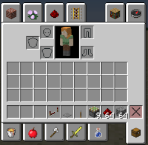
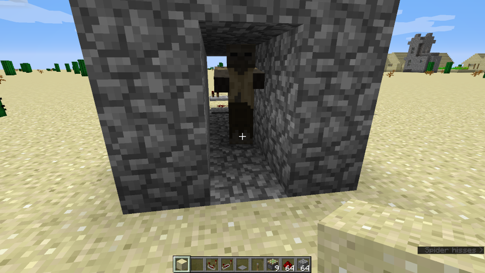
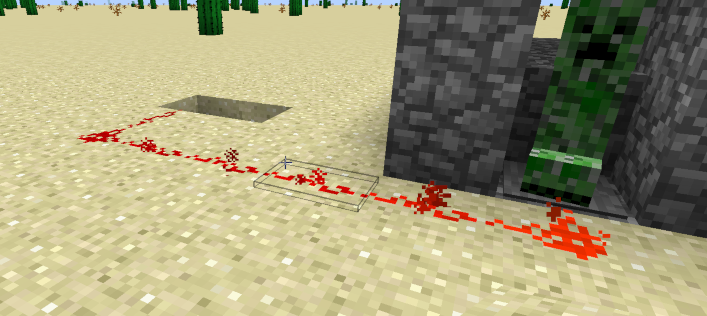

Minecraft
Dein erstes Plugin
In dieser Übung wirst du dein erstes Minecraft-Plugin erstellen, das dich auf Kommando begrüßt
Dein erstes Plugin /sayhello
Inhalt:
Einleitung
Nach den Vorbereitungsarbeiten können wir nun endlich unser erstes Plugin entwickeln. Wenn wir mit dieser Episode fertig sind, wirst du in Minecraft den Befehl /sayhello eingeben können und du wirst eine Antwort erhalten und er wird dich sogar mit deinem Minecraft-Namen ansprechen.

Dieses wird vielleicht noch nicht das absolute Killer-Plugin auf Curse sein aber eine Reise beginnt immer mit ihrem ersten Schritt. Also, los gehts:
Ein neues NetBeans-Projekt anlegen
Als erstes starten wir natürlich NetBeans. Die StartPage brauchen wir nicht und du kannst sie gleich wegklicken. Jetzt gehst du ins Menü File und findest als ersten Menüpunkt New Project … Wenn du den auswählst, siehst du folgendes Fenster:

Du wählst die Kategorie Java und von den Projekten Java Class Library, anschließend klickst du auf Next >. Damit siehst du sofort ein weiteres Fenster, das folgendermaßen aussieht:

Hier vergibst du einen sinnvollen Projektnamen. Da es unser erstes Plugin ist, tut es auch ein etwas einfallsloses FirstPlugin, besser verständlich ist natürlich ein Name wie GreetMe. Für die Project Location suchst du dir einen Platz auf deiner Festplatte, wo du das Plugin auch wiederfindest. Project Folder lässt sich nicht ändern. Dieses Feld zeigt dir nur, wo dein Projekt und alle seine Files gespeichert werden. Damit bist du fertig und kannst auf den Button Finish drücken. Damit verschwindet das Fenster und du hast einen ersten Blick auf dein gesamtes Projekt.
So nun wollen wir uns mal ein wenig orientieren.

Der Arbeitsbereich in NetBeans gliedert sich grundsätzlich in 5 Teile. Wir gehen diese nummernweise durch:
- Im Project Explorer hast du einen Überblick über dein Projekt. Alle Dateien, die du dazu brauchst sind hier aufgelistet und können relative schnell gefunden werden. Die wichtigsten Files wirst du unter Source Packages finden.
- Im Navigator wirst du, nachdem wir das erste File editieren, einen Überblick über das geöffnete File haben. Wenn das File ein wenig größer wird, wirst du sehen, dass es sehr bequem ist, wenn man schnell zu bestimmten Punkten im File springen kann.
- Im Information Panel bekommst du Informationen, die beim Arbeiten wichtig sind. Beispielsweise kannst du hier sehen, ob du dein Projekt erfolgreich “baut”, das heißt für den Einsatz in Minecraft übersetzt werden kann.
- Das ist der Editor. Hier werden wir dann Java-Code reinschreiben
- Das ist die Toolbar. Manche Befehle (z. B. um das Projekt zu bauen) können wir hier schnell erreichen.
Bevor wir jetzt endlich mit dem Programmieren beginnen, müssen wir noch die Datei craftbukkit.jar zu unserem Projekt hinzufügen. Ja du liest richtig, es ist genau dieselbe Datei, die wir bereits verwendet haben, um unseren Server zu starten. Am besten legst du dir eine Kopie an und legst sie im Ordner neben deinem FirstPlugin ab. Nun klickst du im Project Explorer mit der rechten Maustaste auf den Ordner Libraries und wählst den Punkt Add JAR/Folder… aus:

Nun siehst du folgendes Fenster in welchem du zum File craftbukkit.jar navigieren kannst. Wähle es aus und klicke auf Choose.

Jetzt siehst du im Project Explorer im Ordner Libraries die Datei craftbukkit.jar. So jetzt können wir mit dem Programmieren beginnen.
Großeltern-Imponier-Wissen
- Java-Programme müssen, bevor sie ausgeführt werden können, gebaut werden. Das heißt, dass man den Java-Code (also das, was du schreibst) in einen Maschinen-Code (also das, was ein Computer ausführen kann) umwandeln muss. Manchmal sagt man auch, dass das Programm compiliert werden muss.
- Wenn du ein Minecraft-Plugin schreibst, brauchst du Informationen vom Server (z. B. den Namen des Spielers) oder willst auch das Verhalten des Servers teilweise verändern (z. B. soll er auf das Kommando
/sayhelloreagieren, was er ja sonst mal so nicht täte). Damit das möglich ist, gibt es das sogenannte API (Application Programmer Interface), das sind alle “Funktionen”, die der Server für dich zum Programmieren zur Verfügung stellt. Damit wir das API zur Verfügung haben, fügen wir die Dateicraftbukkit.jarzu unserem Projekt dazu.
Ausführliche Anleitung
Ein Package und die Plugin-Klasse anlegen
Du speicherst Java-Dateien in Packages ab. Wenn du im Project Explorer den Ordner Source Packages öffnest, siehst du das Package <default package>. Damit Package-Namen aber sicherlich eindeutig sind, legst du besser ein neues Package an, mit io.coderdojo-linz.<dein-name>.firstplugin (dabei ersetzt du <dein-name> durch deinen Namen). Wenn du eine eigene Domain über die du im Netz erreichbar bist hast, dann kannst du auch die verwenden.
Also klickst du mit der rechten Maustaste auf Source Packages und wählst aus dem Kontextmenü New und dann Java Package … aus.

Im nun folgenden Fenster gibst du den Namen deines Packages, wie wir oben beschrieben haben, ein und klickst auf den Button Finish.

Jetzt ist das Package <default package> verschwunden. Das macht nichts, weil wir es derzeit echt nicht brauchen. Und nun musst du noch die Klasse anlegen, in der wir dieses Plugin programmieren. Dazu (Überraschung!!) klickst du mit der rechten Maustaste auf das neu erstellte Package und wählst dann New und Java Class… aus

Im darauffolgenden Fenster gibst du der neuen Klasse einen Namen und klickst auf Finish.

Jetzt solltest du in NetBeans ziemlich genau dieses Bild vor dir haben:

Die grauen Zeilen am Anfang des Files sehen wahrscheinlich ein wenig anders aus. Das macht aber nix, weil das ist ein Kommentar und Kommentare werden vom Compiler ignoriert. Man verwendet Kommentare, um etwas in sein Programm reinzuschreiben, das für Menschen wichtig ist, aber nicht für Computer. Du kannst das ausprobieren und in einer Zeile außerhalb eines Kommentars folgende Zeilen dazuschreiben:
/*
Ich kann so schreiben wie ich bin. Du darfst.
*/Wenn du jetzt aber die Zeichen /* und */ wegnimmst, dann wirst du sehen, dass der Text, den du geschrieben hast, rot unterstrichen ist und das bedeutet, dass der Compiler in deinem Java-Programm einen Fehler entdeckt hat. Also schließen wir daraus, dass mit /* ein Kommentar beginnt und so lange ist, bis die Zeichen */ vorkommen.
Die Klasse programmieren
Nun musst du dieser Klasse als erstes mal mitteilen, dass sie ein Plugin werden soll. Das machst du indem du in der Zeile mit public class FirstPlugin { folgendes dazuschreibst:

Du siehst nun, dass das Wort JavaPlugin rot unterstrichen ist und am Beginn der Zeile einen Hinweis bekommen hast. Das bedeutet, dass der Compiler einen Fehler gefunden hat (rot unterstrichen) und aber einen oder mehrere Lösungsvorschläge für dich hat (gelbe Glühbirne am Beginn der Zeile). Wenn du auf die Glühbirne klickst, bekommst du die Option angeboten, Add import org.bukkit.plugin.java.JavaPlugin und genau das wählst du aus. Damit sollte die Fehlermeldung verschwunden sein und ein paar Zeilen über der Zeile, die du gerade geschrieben hast, die Codezeile import org.bukkit.plugin.java.JavaPlugin; stehen.
Somit hätten wir ein fast lauffähiges Plugin, das genau gar nix macht. Da das genau niemand braucht, werden wir dem Ding mal sagen, dass es bei Aufruf Hello stranger ausgeben soll. Dazu müssen wir eine Methode anlegen und das geht so: Als erstes klickst du in die Klasse FirstPlugin, das heißt, du platzierst den Cursor in die Zeile zwischen der geschwungenen Klammer auf und wieder zu.
public class FirstPlugin extends JavaPlugin {
// your cursor must be here
}Also du klickst genau in die leere Zeile. Dann gehst du auf das Menü Source und wählst Insert Code… aus.

Damit bekommst du ein kleines Fensterchen, in welchem du Override Method… auswählst.

Und weils grad so lustig ist, kommt gleich noch ein Fenster, in welchem wir die Zeile mit onCommand(CommandSender sender, …) auswählen.

Wenn du dann auf Generate klickst, siehst du in deiner Klasse eine erste Methode. In einer Methode legst du fest, was das Plugin machen soll. Dazu löschst du als erstes die Zeile mit return super.onCommand(sender, command, label, args) und schreibst stattdessen folgendes rein:
sender.sendMessage("Hello stranger");
return true;Am Ende sollte deine Klasse genau so aussehen:

Wenn du dich ein wenig umsiehst, wirst du merken, dass zum Import von org.bukkit.plugin.java.JavaPlugin noch ein paar weitere Imports dazugekommen sind und dann eben die Methode onCommand. Wenn du das noch nicht verstehst, mach dir keine Sorgen. Wir kommen darauf zurück.
Jetzt wollen wir aber so schnell wie möglich durch und unser Plugin zum Laufen bekommen. Was uns noch fehlt ist, dass wir für Minecraft erkenntlich machen, wie das Plugin heißt und auf welches Kommando es reagiert. Das machen wir im plugin.yml.
Das plugin.yml anlegen, das Projekt bauen und testen
Im plugin.yml schreiben wir alles das rein, das Minecraft braucht, um unser Plugin zu erkennen und im richtigen Moment auch aufrufen zu können. Dazu legen wir das File zuerst einmal an. Überraschenderweise klickst du wieder mit der rechten Maustaste auf das Source Package und wählst New und YAML File… aus. Falls du diesen Eintrag nicht findest, wählst du im Menü ganz unten Other… aus und wählst aus der Kategorie Other den Punkt YAML File aus.

Inzwischen kennst du den zweiten Schritt wahrscheinlich auch schon: Wir müssen das File benennen. Achte darauf, dass,
- das File wirklich
pluginheißt und - wie beim Java-File auch, du nicht die Dateierweiterung
.ymldazuschreibst. Es reicht der Nameplugin, im Feld Created File siehst du, dass dasymlautomatisch angehängt wird:

Und wenn du jetzt in den Project Explorer schaust, dann entdeckst du, dass unser geliebtes <default package> wiederauferstanden ist. Das ist auch richtig so, da Minecraft das plugin.yml genau an dieser Stelle sucht.

Jetzt haben wir wieder ein leeres File und dürfen hier die notwendigen Informationen eintragen:

Bevor du beginnst, das abzuschreiben, lies dir die folgenden Punkte bitte durch: Als erstes achte bitte darauf, dass nach den Doppelpunkten immer unbedingt ein Leerzeichen kommen muss.
- name ist eben der Name und kann beliebig gewählt werden. Sinnvollerweise nennen wir unser Plugin so, wie wir auch das Projekt genannt haben.
- In main legen wir fest, in welcher Klasse das Plugin implementiert ist. Und zwar müssen wir das inklusive dem Package-Namen angeben. Vergleiche die Zeile mit
mainmit der Darstellung des Packages und der Klasse im Bild darüber. Du siehst, dass das übereinstimmt (bis auf.java). - version ist eben die Verion. Das darfst du dir aussuchen.
- authors ist eine Liste der Authoren, die untereinander stehen und mit einem Minus (-) anfangen. Hier musst du darauf achten, dass die Zeilen mit den Listeneinträgen ein paar Leerzeichen (Achtung: keine Tabs) eingerückt sind.
- description beschreibt das Plugin. Hier kannst du deiner Fantasie wieder freien Lauf lassen.
- commands listet alle Kommandos, auf die das Plugin reagiert auf und gibt eine kurze Beschreibung und einen Benutzungshinweis an. Wir wollen, dass unser Plugin auf das Kommando
/sayhelloreagiert. Daher haben wir genau dieses Kommando angegeben. Auch hier achte wieder auf die Einrückungen. Diesmal sind es sogar zwei bei description und usage.
Damit bist du jetzt wirklich fertig und kannst das gesamte Projekt bauen. Dazu klickst du auf den Hammer in der Toolbar:

Daraufhin sollte im Information Panel im Tab Output ca. folgende Information stehen:

Der wichtigste Punkt ist die letzte Zeile, in der auf jeden Fall BUILD SUCCESSFULL stehen muss. Damit ist nämlich klar, dass dein Projekt korrekt ist und vom Compiler übersetzt werden kann.
Um dein Plugin auszuprobieren musst du im File-Explorer (Windows) oder Finder (Mac) in dein NetBeans Projekt-Directory reinsehen. Dort sollte sich nun ein weiteres Directory dist befinden, in dem sich wiederum ein File FirstPlugin.jar befinden sollte. Dieses nimmst du nun und bewegst es in das Directory plugins des Server-Directories, das du noch aus unserer ersten Episode kennst.
Nun kannst du den Server starten. Als erstes überprüfen wir, ob das Plugin korrekt geladen wurde. Das sehen wir im Log des Servers, wenn er hochstartet:
Loading libraries, please wait… [20:49:34 INFO]: Starting minecraft server version 1.8.7 [20:49:34 INFO]: Loading properties [20:49:34 INFO]: Default game type: SURVIVAL [20:49:34 INFO]: This server is running CraftBukkit version git-Spigot-6d16e64-b105298 (MC: 1.8.7) (Implementing API version 1.8.7-R0.1-SNAPSHOT) [20:49:34 INFO]: Debug logging is disabled [20:49:34 INFO]: Server Ping Player Sample Count: 12 [20:49:34 INFO]: Using 4 threads for Netty based IO [20:49:34 INFO]: Generating keypair [20:49:34 INFO]: Starting Minecraft server on *:25565 [20:49:34 INFO]: Using default channel type [20:49:34 INFO]: Set PluginClassLoader as parallel capable [20:49:34 INFO]: [FirstPlugin] Loading FirstPlugin v0.1.0 …Innerhalb der ersten 15 bis 20 Zeilen solltest du die Zeile
[FirstPlugin] Loading FirstPlugin v0.1.0 sehen, dann wurde dein Plugin korrekt geladen. Lass dich nicht verwirren, da steht noch sehr viel mehr in der Console, also musst du ein Stück weit nach oben scrollen, damit du das siehst.
Abschließend kannst du testen, indem du das Kommando sayhello in der Konsole eingibst. Der Server sollte mit Hello stranger antworten. Auch kannst du noch ins Spiel gehen und dort den Befehl mit Slash /sayhello eingeben. Auch hier sollte der Server mit einem freundlichen Hello stranger antworten.
Eine Erweiterung
Apropos freundlich. Jemanden mit “Stranger” zu begrüßen ist in Bezug auf Freundlichkeit sicherlich noch ausbaufähig. Da das Bukkit-API uns die Möglichkeit gibt, den Namen des Spielers (also den Minecraft-Namen natürlich) rauszufinden, werden wir das benutzen um den Spieler wirklich freundlich mit Namen zu begrüßen.
Dazu gehen wir wieder ins NetBeans und zur Methode onCommand unseres Plugins. Weil grad Zeit ist, sehen wir uns den Code der Methode ein wenig genauer an.
public boolean onCommand(CommandSender sender, Command command, String label, String[] args) {
sender.sendMessage("Hello stranger");
return true;
}Also der Reihe nach:
- In der ersten Zeile fällt in der Mitte eben der Name
onCommandauf. Wir merken uns: Jede Methode hat einen Namen. - Nach dem Namen ist eine Klammer auf, die kurz vor Ende der Zeile auch wieder zu geht. Wir merken uns: Jede Methode hat gleich nach dem Namen eine Klammer auf und auch wieder eine Klammer zu.
- Das zwischen diesen Klammern nennt man Parameter. Mit diesen kann man einer Methode Informationen geben, die sie für ihre Arbeit braucht. Du siehst bei der Methode
onCommandoben, dass sie einen Parametersenderhat. Damit ist der “Absender” des Kommandos, also die Spielerin, die/sayhelloeingetippt hat, gemeint. - Am Ende der Zeile ist eine geschwungene Klammer auf (
{), die drei Zeilen später auch wieder geschlossen wird. Zwischen diesen Klammern steht drinnen, was die Methode jetzt wirklich macht. Das sind in unserem Fall zwei Dinge und da sehen wir uns grad mal die erste Zeile an:sender.sendMessage("Hello stranger");: Wir wissen schon von oben:senderist der Absender des Kommandos. Nach dem Punkt kannst du alle die Methoden hinschreiben, die ein Sender “versteht”.sendMessageist offensichtlich eine Methode, die einen Text ausgibt. Diese Methode hat ebenfalls einen Parameter, nämlich den Text, den wir gerne ausgegeben hätten.
Gut, mit diesem Wissen können wir uns sammeln und kurz überlegen, was wir brauchen, damit wir den Sender mit seinem Minecraft-Namen begrüßen können.
- Wir brauchen eine Möglichkeit den Namen rauszufinden. Das geht mit der Methode
sender.getName(). Du siehst, diese Methode braucht keine Parameter. Daher kommt nach der Klammer auf, sofort wieder eine Klammer zu. - Damit wären wir bei
sender.sendMessage(sender.getName()). Aber was ist mit dem “Hello”, damit unsere Begrüßung auch wirklich freundlich wird? - Daher brauchen wir eine Möglickeit zwei Texte (also “Hello” und den Minecraft-Namen der Spielerin) zusammenzukleben. Das geht in Java mit dem Zeichen +. Also ergibt zum Beispiel
"Ich " + "programmiere " + "Java"den Text"Ich programmiere Java". - Also müssen wir die Zeile noch folgendermaßen erweitern:
sender.sendMessage("Hello " + sender.getName());.
Zum Schluss sollte deine Methode so aussehen:
public boolean onCommand(CommandSender sender, Command command, String label, String[] args) {
sender.sendMessage("Hello " + sender.getName());
return true;
}Nun sind wir schon wieder fertig. Wie oben musst du das Projekt wieder bauen (weißt schon, der Hammer in der Toolbar) und dann legst du am besten in deinem Verzeichnis plugins im VerzeichnisbukkitServer ein weiteres Verzeichnis mit Namen update an. Dorthinein kopierst du jetzt das jar-File. Abschließend gehst du in die Console, in der du den Server gestartet hast und tippst einfach reload. Dann sollte das Plugin neu geladen sein und du kannst es ausprobieren.
Zum Abschluss möchte ich dir noch eine Kleinigkeit zeigen: Es wird immer wieder notwendig sein, dass wir auf die Konsole des Servers etwas rausschreiben und daher wollen wir das gleich mal üben. Bisher kam die Antwort des Servers ja nur auf die Konsole, wenn du das Kommando direkt in der Konsole eingetippt hast. Wir wollen aber, dass, sobald irgendwer das Kommando /sayhello eintippt, in der Konsole vermerkt wird, dass dieses Kommando aufgerufen wurde.
Du kannst über Bukkit.getLogger() immer auf die Konsole zugreifen und der Logger hat eine Methode info mit der du Informationen in die Konsole schreiben kannst. Zusammengefasst sieht das ganze dann so aus:
public boolean onCommand(CommandSender sender, Command command, String label, String[] args) {
sender.sendMessage("Hello " + sender.getName());
Bukkit.getLogger().info("A player was greeted");
return true;
}
Der Logger hat verschiedene Levels, die das Filtern des Logs erlauben. Die wichtigsten sind
- Info: das sind einfache Informationen. Diese werden mit der Methode
infoausgegeben. - Warning: das sind Meldungen, die von einem Server-Administrator beachtet werden sollten. Diese werden mit der Methode
warningausgegeben. - Severe: das sind kritische Meldungen, denen 100%ig auf den Grund gegangen werden muss. Diese werden mit der Methode
severeausgegeben.
Da die Information, dass ein Spieler begrüßt wurde, nicht wirklich kritisch ist, belassen wir es bei einer einfachen Info-Message im Log.
Großeltern-Imponier-Wissen
- Texte nennt man in der Informatik Zeichenketten oder auf Englisch: Strings
- Ein Log ist so etwas wie ein Tagebuch. Vielleicht kennst du das aus Star Treck: “Logbuch der Enterprise, Sternzeit …”
Zusammenfassung
Wenn du das Gefühl hast, dass das alles ganz schön viel ist und ein wenig verwirrend, dann lass dich nicht einschüchtern. Am Besten probierst du es gleich nochmal von vorne und legst nochmals ein neues Plugin-Projekt an. Am Anfang wirst du vielleicht noch öfter nachsehen müssen, dann reicht vielleicht eine Liste der Dinge, die gemacht werden müssen. So eine siehst du hier am Ende dieser Episode. Und nach einer Weile wird dir das ganz geläufig sein. Wie fast immer: Übung macht die Meisterin (und auch den Meister).
Kurzversion für Profis
- Neues Projekt anlegen: Menüpunkt File > New Project, in Choose Project: Java > Java Class Library mit Projektnamen
FirstPlugin craftbukkit.jarzu den Libraries dazufügen: Rechte Maus-Klick auf Libraries > Add JAR/Folder- Package anlegen: Rechte Maus-Klick auf Source Packages, Auswahl von New > Java Package mit Package Name z.B.
io.coderdojo.<dein-name>.firstplugin - Klasse anlegen: Rechte Maus-Klick auf das eben erstellte Package, Auswahl von New > Java Class mit Class Name z.B.
FirstPlugin extends JavaPluginnach dem Klassennamen dazuschreiben- Methode
onCommandgenerieren: Rechte Maus-Klick im Editor zwischen den geschwungenen Klammern > Inserter Code > Override Method > Auswahl vononCommand> Generate - Die Methode ausprogrammieren, also reinschreiben, was geschehen soll, wenn das Command aufgerufen wird:
public boolean onCommand(CommandSender sender, Command command, String label, String[] args) { sender.sendMessage(“Hello ” + sender.getName()); Bukkit.getLogger().info(“A player was greeted.”); return true; } plugin.ymlzum Projekt hinzufügen: Rechte Maus-Klick auf Source Packages > New auswählen > YAML File mit File NamepluginDie Details im
plugin.ymleingeben, wobei du die Details in den eckigen Klammern [] durch deine Werte ersetzt:YAML Template.
name: [Project Name] main: [Package Name].[Class Name] version: 1.0.0 author: [dein Name] description: [deine Beschreibung des Plugins] commands: [Command Name]: description: [deine Beschreibung des Kommandos] usage: /[Command Name]
Baue das Paket: In Icon Leiste auf den Hammer Build Project (F11) klicken
Kopiere bzw. ersetze das fertige jar File aus
dist(siehe Pfad im Output) in das Minecraft Server Plugin-Verzeichnis.Starte den Server oder gib
reloadin die Server Konsole ein.Teste das Plugin indem du in Minecraft dein Kommando mit dem Namen, den du im
plugin.ymlunter[Command Name]vergeben hast, aufrufst.
Die Redstone-Falle
Eine hinterhältige Falle für Zombies oder Mitspieler
Eine einfache Falle mit Redstone
In diesem Beispiel werden wir eine hinterhältige Falle bauen die Minecraft-Monster einfach zerquetscht. Dazu müssen wir die Creeper und/oder Zombies einfach in einen Gang locken. Eignet sich auch zum looten
Vorbereitung
Was wir dafür benötigen ist in erster linie Cobblestone (Bruchstein), 2-3 Pistons (Kolben), einen Schalter, eine Pressure Plate (Druckplatte) und etwas Redstone.

Unterbau
Damit wir die Pistons ordentlich platzieren können, heben wir eine 2 Block tiefe Grube und platzieren die Pistons. Anschließend noch Repeater an die Pistons anschließen (bitte auf die Richtung achten - müssen zum Piston hin zeigen). Dann noch alles mit Redstone verbinden und irgendwo weiter weg an die Oberfläche leiten. Am Eingang platzieren wir eine Pressure-Plate damit die Falle ausglöst werden kann.
Danach können wir alles schön mit Cobblestone zumachen damit man nicht gleich sieht dass es eine Falle ist.
Wenn der Gang mit der versteckten “Überraschung” dann fertig ist, sieht es ungefähr so aus:

Gut - die Falle selbst wäre jetzt fertig - unglücklicherweise kann man sie noch nicht auslösen. Das muss sich noch ändern.
Steuerung der Falle
Als ersten Versuch verbinden wir die Pressure-Plate einfach mittels Redstone-Leitung mit den Pistons. Damit wird die Falle sofort ausgelöst sobald irgendetwas die Platte betritt.

Wie man auf dem Bild sieht bringt das leider noch nicht so viel, da die Falle zu schnell auslöst. Der Creeper hat sich lediglich etwas erschreckt ….
Besser wäre es die Falle ein wenig zu verzögern. Das geht mit Redstone-Repeatern:
die Repeater müssen in die richtige Richtung zeigen, sonst funktioniert es nicht.
Durch Rechtsklick auf die Repeater kann man eine Verzögerung in 3 Stufen einstellen. Damit hat der Creeper dann genug Zeit um in die Falle hineinzugehen, bevor sie zuschnappt. Probiert es einfach aus.
Einfaches Teleporter Plugin
In dieser Anleitung machst du ein einfaches Teleport-Plugin mit IntelliJ IDEA.
Minecraft Teleporter
Dieses plugin wurde mit der Entwicklungsumgebung IntelliJ der Firma JetBrains geschrieben. IntelliJ unterstützt die Entwicklung von Minecraft Plugins sehr gut.
Vorbereitungen
Zuerst ist es notwending die Entwicklungsumgebung herunterzuladen und zu installieren. Verwendet hierfür die “Community Edition”. Wenn das geschehen ist, bitte das Modul für Minecraft hinzufügen.
Dafür bitte unter “File” -> “Settings” die Einstellungen öffnen und danach “Plugins” klicken.

Danach könnt ihr mit “Browse repositories” und dem Suchfeld nach “Minecraft” suchen.

Ein Klick auf “Install” startet den Installationsvorgang (die Schaltfläche ist unter dem Titel und auf dem Bild leider nicht zu sehen).
Neues Projekt anlegen
Im Menü “File” -> “New” könnt ihr nun ein neues Minecraft Projekt starten.

Bitte hier den passenden Minecraft Server (Bukkit) anhaken und auf “Next” klicken.

Wir verwenden zum bauen des Plugins das “Gradle” - System. Die Werte für GroupId und ArtifactId sind momentan beliebig. Mit “Next” gehts weiter.
Anschließend geben wir dem Plugin noch einen Namen und eine Beschreibung. Main Class Name ist der Name der Java-Klasse in die wir die Funktionen unseres
Plugins coden werden.

Danach erhält das Projekt noch einen Namen und wir legen fest, wo der Code gespeichert werden soll.

Mit einem kurzen Klick auf “Finish” wird unser Projekt angelegt. Bitte kurz Geduld. Der Vorgang kann schon mal 1-2 Minuten dauern.
Erstes Command
Wenn alle Schritte oben erfogreich waren, sollte euer Bildschirm nachher in etwa so aussehen:

Die wichtisten Dateien am Anfang sind
- plugin.yml - sie enthält die Beschreibung der Befehle die das Plugin können soll und
- Teleporter.java - Wird im IntellJ nur als “Teleporter” angezeigt. Sie enthält den Code für die Aktionen.
Zuerst werden wir ein neues Kommando implementieren:

Damit wird festegelegt dass dieses Kommando von unserem Plugin behandelt wird. Nun müssen wir noch dafür sorgen, dass es auch behandelt wird: Dazu öffnen wir die Klasse Teleporter und fügen “onCommand” ein. (ein druck auf <strng> und die Leertaste machen das viel einfacher).

Danach sorgen wir dafür, dass auch etwas passiert, wenn jemand “/sayhello” in den Chat tippt.

das sieht dann in etwa so aus:

Kleine hilfe am Rande: Damit ihr nicht jedes mal nach dem Bauen das Plugin in den Server hineinkopieren müsst, kann man mit folgendem kleinen Zusatz im build.gradle das auch automatisch erledigen lassen.

Teleportieren
Um erfolgreich teleportiert werden zu können muss man vorher natürlich wissen wohin. Am Ende erscheint ihr noch in einer Wand oder in 10km Höhe.
Deswegen werden wir vorher einen Kommando definieren, bei dem man einen Ort markiert, an den Steve sich teleportieren soll.
plugin.yml
name: Teleporter
version: @version@
main: at.coderdojo.teleporter.Teleporter
load: STARTUP
authors: [Minecraft, Mastercoders]
description: Beispielplugin zum Teleportieren
website: https://coderdojo-linz.github.io/
commands:
sayhello:
description: Says hello
usage: /sayhello
teleportziel:
description: Ziel, an das wir uns teleportieren wollen.
usage: /teleportziel
teleportzu:
description: Teleportiere zum vorher markierten Ziel.
usage: /teleportzuteleportziel soll das Ziel markieren, an das sich Steve teleportieren soll. z.B. kann er sich so jedesmal augenblicklich nach Hause vor sein Bett teleportieren. Praktisch, wenn ihr euch schnell vor ein paar Zombies in Sicherheit bringen wollt tippt ihr danach einfach teleportzu.
Nun fehlt uns nur noch der Code dazu im Teleporter.java.
Zuerst müssen wir die onCommand Funktion anpassen:
@Override
public boolean onCommand(CommandSender sender, Command command, String label, String[] args) {
//sender.sendMessage("Hallo " + sender.getName());
switch (command.getName()) {
case "sayhello":
sender.sendMessage("Hallo " + sender.getName());
break;
case "teleportziel":
teleportZielMerken(sender);
break;
case "teleportzu":
teleportZuZiel(sender);
break;
default:
sender.sendMessage("Leider kann ich das Kommando " + command.getName() + " noch nicht.");
}
return true;
}Damit kann onCommand zwischen den einzelnen Kommandos unterscheiden. Als nächstes brauche wir noch eine Möglichkeit die
gemerkten Position für jeden einzelnen Spieler zu merken.
public final class Teleporter extends JavaPlugin {
Dictionary<String, Location> teleportZiele = new Hashtable<>();
....Die Funktion, sich den Punkt zu merken sieht dann in etwa so aus:
private void teleportZielMerken(CommandSender sender) {
Player player = (Player) sender;
teleportZiele.put(player.getName(), player.getLocation());
player.sendMessage("Ok, " + player.getName() + ", ich habe mir das gemerkt");
}und die Funktion die Steve zu dem Ort zurückbringen soll in etwa so:
private void teleportZuZiel(CommandSender sender) {
Player player = (Player) sender;
if (teleportZiele.get(player.getName()) == null) {
player.sendMessage("Hey, " + player.getName() + ". Du musst dir zuerst einen Punkt merken");
return;
}
player.teleport(teleportZiele.get(player.getName()));
player.sendMessage("Ok, " + player.getName() + ", hab dich dorthin geschickt");
}Info: das if (teleportZiele.get(player.getName()) == null) dient dazu, zuerst festzustellen ob wir uns schon eine
Position für diesen Spieler gemerkt haben. Ansonst würde das player.teleport einen Fehler verursachen.
Das gesamte Teleporter.java sieht nach den Änderungen so aus:
package at.coderdojo.teleporter;
import org.bukkit.Location;
import org.bukkit.command.Command;
import org.bukkit.command.CommandSender;
import org.bukkit.entity.Player;
import org.bukkit.plugin.java.JavaPlugin;
import java.util.Dictionary;
import java.util.Hashtable;
public final class Teleporter extends JavaPlugin {
Dictionary<String, Location> teleportZiele = new Hashtable<>();
@Override
public void onEnable() {
// Plugin startup logic
}
@Override
public void onDisable() {
// Plugin shutdown logic
}
@Override
public boolean onCommand(CommandSender sender, Command command, String label, String[] args) {
//sender.sendMessage("Hallo " + sender.getName());
switch (command.getName()) {
case "sayhello":
sender.sendMessage("Hallo " + sender.getName());
break;
case "teleportziel":
teleportZielMerken(sender);
break;
case "teleportzu":
teleportZuZiel(sender);
break;
default:
sender.sendMessage("Leider kann ich das Kommando " + command.getName() + " noch nicht.");
}
return true;
}
private void teleportZielMerken(CommandSender sender) {
Player player = (Player) sender;
teleportZiele.put(player.getName(), player.getLocation());
player.sendMessage("Ok, " + player.getName() + ", ich habe mir das gemerkt");
}
private void teleportZuZiel(CommandSender sender) {
Player player = (Player) sender;
if (teleportZiele.get(player.getName()) == null) {
player.sendMessage("Hey, " + player.getName() + ". Du musst dir zuerst einen Punkt merken");
return;
}
player.teleport(teleportZiele.get(player.getName()));
player.sendMessage("Ok, " + player.getName() + ", hab dich dorthin geschickt");
}
}Erste Schritte mit Redstone
In dieser Übung lernst du Redstone in Minecraft kennen
Erste Schritte mit Redstone
Voraussetzung
Für diese Übung brauchst du Minecraft. Du solltest mit den Grundfunktionen wie Steuerung des Spielers, verwenden von grundlegenden Blöcken etc. vertraut sein.
Was ist Redstone?

Redstone ist ein wichtiger Rohstoff in Minecraft. Wie in der echten Welt mit Strom kannst du mit Redstone in Minecraft Schaltkreise (Englisch Ciruits) bauen. Egal ob Falle für Monster, Lichtsteuerung oder automatische Türen - für all das verwendest du Redstone.
Hinweis für Eltern: Schaltungen mit Redstone sind ein gutes Beispiel dafür, warum Minecraft viel mehr ist als nur ein Unterhaltungsspiel. Kreativität und logisches Denken sind gefragt, wenn man mit Redstone arbeiten möchte.
Spiel zum Experimentieren vorbereiten
Um Redstone kennenzulernen, startest du am besten eine flache Welt im Kreativmodus.


Redstone im Inventar
Die Gegenstände, die mit Redstone zu tun haben, findest du im Inventar:

Dein erster Schaltkreis

Setze einen Redstone-Block. Er ist die Energiequelle für deine Schaltung.
Ein paar Felder daneben setzt du eine Redstone-Lampe. Sie leuchtet, wenn sie mit Energie versorgt wird.
Anschließend verbinde die beiden Blöcke mit Redstone. Jetzt fließt Energie und die Lampe leuchtet.
Schalter

Ersetze den Redstone-Block durch einen normalen Block. Ich verwende hier blaue Wolle. Tipp: Es ist üblich, dass Schaltkreise auf eingefärbter Wolle gelegt werden. Dadurch erkennt man leichter, wie eine Schaltung funktioniert.
Bringe einen Schalter an dem normalen Block an. Er ist eine Energiequelle, die du ein- und ausschalten kannst.
Schalte jetzt die Redstone-Lampe ein und wieder aus.
Ersetze den Schalter durch einen Knopf und beobachte, wie er nach dem Drücken einen kurzen Energieimpuls abgibt.
Kolben

Setze einen klebrigen Kolben. Tipp: Wenn der Kolben nach oben ausfahren soll, muss du in den Flugmodus wechseln (2 x schnell hintereinander die Leertaste drücken) und ihn von oben setzen.
Setze einen beliebigen Block auf den Kolben. Ich verwende einen Gold-Block.
Füge zu deiner Schaltung eine Abzweigung hinzu. Verbinde sie mit dem Kolben.
Betätige den Schalter und beachte, wie Licht und Kolben sich gleichzeitig verändern.
Fackel
Fackel als Energiequelle

Setze eine Redstone-Fackel wie oben gezeigt. Die Fackel ist eine Energiequelle.
Achte im Beispiel oben darauf, wie Redstone über Stufen nach oben fließen kann. Dadurch fängt die Lampe zu Leuchten an.
Fackel ein- und ausschalten

Fackeln gehen aus wenn sie mit Energie versorgt werden. Sie drehen ein Energiesignal also um (aus an wird aus und umgekehrt).
Übungsaufgabe
Baue ein Haus mit Licht an der Decke. Es soll innen einen Schalter haben, mit dem du es ein- und ausschalten kannst. Verkleide anschließend dein Haus damit man von außen die Redstone-Schaltung nicht sieht.
Tipp 1: Lass die Energie mit Redstone über eine Treppe nach oben fließen:

Tipp 2: Redstone überträgt Energie maximal 15 Blöcke weit. Die Energiestärke nimmt dabei ab. Um das Signal nach einer langen Leitung zu verstärken, setze einen Verstärker ein.

Tipp 3: Um dein Licht auszuprobieren, kannst du mit dem Befehl /time set night auf Nacht umschalten. Mit /time set day kommst du wieder in den Tag.
Wie geht es weiter?
Im CoderDojo Linz haben wir das Schaltkreis-Handbuch für Minecraft. Lies dort mehr über Redstone und baue die im Buch gezeigten Schaltungen nach.
Getafix Arguments
In dieser Episode wirst du andere heilen lernen
Miraculix der Druide – Teil 2
Inhalt:
Einleitung
In der letzten Episode haben wir begonnen, ein Plugin für die Befehle gethealth und heal zu implementieren. Ich habe dir ja versprochen, dass wir am Ende nicht nur uns selbst, sondern auch andere Spieler auf dem Server heilen werden können. Also sollen die folgenden Befehle nun wirklich funktionieren:
/gethealth me
/gethealth OidaZocktYT
/heal me
/heal OidaZocktYT
Ausführliche Anleitung
Am Anfang ein wenig Zusammenräumen
Ich habe dir ja in der letzten Episode die Lösung für das /heal Kommando versprochen. Also am Ende sollte deine Methode onCommand so aussehen:
public boolean onCommand(CommandSender sender, Command command, String label, String[] args) {
if (label.equalsIgnoreCase(“gethealth”)) { // get health
if (sender instanceof Player) {
Player player = (Player) sender;
sender.sendMessage(“Health of ” + player.getName() + “: “ + player.getHealth());
return true;
} else {
sender.sendMessage(“This command can only be used by players”);
return false;
}
} else // heal
if (sender instanceof Player) {
Player player = (Player) sender;
player.setHealth(20.);
player.sendMessage(“Successfully healed player ” + player.getName() + “.”);
Bukkit.getLogger().info(“The player ” + player.getName() + “ was successfully healed.”);
return true;
} else {
sender.sendMessage(“This command can only be used by players”);
return false;
}
}
Ich weiß ja nicht, wie es dir geht, aber das fängt an, wie ein richtiges Programm auszusehen. Leider muss man auch anmerken, dass es auch schon anfängt, ein wenig unübersichtlich zu werden.
Bevor das mit dem Einbau neuer Features wirklich in Chaos ausartet, wollen wir gleich ein bisschen zusammenräumen.
Du siehst ja sicherlich, dass sich die ganze Methode in zwei große Blöcke unterteilt
- Die Behandlung von
/gethealth - Die Behandlung von
/heal
Damit du es gut erkennst habe ich die beiden Blöcke fett eingezeichnet. Nun ist es aber so, dass die beiden Blöcke selbst wieder sehr ähnlich sind. Sie überprüfen beide, ob sender eh ein Player ist und machen dann das Gewünschte oder geben eine Fehlermeldung aus. Da könnten wir doch die Überprüfung, ob sender ein Player ist gleich am Anfang der Methode genau einmal machen und dann erst das Kommando ausführen.
public boolean onCommand(CommandSender sender, Command command, String label, String[] args) {
if (!(sender instanceof Player)) {
sender.sendMessage("Command can only be used by player");
return false;
}
Player player = (Player) sender;
if (label.equalsIgnoreCase("gethealth")) {
player.sendMessage("Health of " + player.getName() + ": " + player.getHealth());
return true;
} else {
player.setHealth(20.);
return true;
}
}
Ok, da hat sich jetzt einiges getan, das wir uns näher ansehen müssen: Zu Beginn haben wir das if mit der eh schon bekannten Bedingung, doch halt! Siehst du das ! vor der Bedingung? Das bedeutet Nicht. Das heißt jetzt, wenn sender nicht ein Player (also wenn sender kein Player) ist, dann geben wir eine Fehlermeldung aus. Und dann kommt da das return false. Das wollen wir uns auch gleich mal ansehen:
Zum einen will ich dir erklären, was das Wort return zu bedeuten hat. Wie du ja sicherlich schon bemerkt hast, werden Programme Anweisung für Anweisung, von oben nach unten, ausgeführt. Wenn ein if kommt entscheidet es sich, wo es weitergeht (je nachdem, wie die Bedingung in der Klammer nach dem if ausgeht), aber sonst gehts recht einfallslos dahin. Wenn aber ein return auftaucht, dann kommt wieder Leben in die Sache, weil da wird die laufende Methode sofort verlassen.
Gut wirst du sagen, das ist ja alles recht gut und schön, aber warum steht da noch dieses false dabei? Dazu wollen wir uns nochmals die allererste Zeile von onCommand ansehen:
public boolean onCommand(CommandSender sender, Command command, String label, String[] args) {Den hinteren Teil ab onCommand haben wir uns ja schon letztes Mal angesehen (du weißt schon: onCommand ist der Name, dann kommen die Parameter). Heute wollen wir uns die ersten beiden Wörter ansehen:
publicheißt, dass die Methode von außen aufgerufen wird. Stell dir das so vor, dass der Spieler die MethodeonCommanddurch das Eintippen des Kommandos/gethealthoder/healaufruft. Das passiert aber außerhalb dieser Klasse. Wenn wir dann gegen Ende dieser Episode neue Methoden hinzufügen, dann werden dieprivatesein weil sie nur vononCommandaber nicht von irgendwo außerhalb dieser Klasse aufgerufen werden.booleanheißt, dass beim Verlassen der Methode ein Wert des Datentypsboolean(das ist entwedertrueoderfalse, ja genau so wie bei der Bedingung in einerif-Bedingung) zurückgegeben wird.
Also heißt das, dass onCommand nicht einfach so verlassen werden kann, sondern, dass ein boolescher Wert angegeben werden muss. Deswegen steht hier auch noch das false. Wir könnten auch true zurückgeben, aber es gibt die Konvention, dass onCommand den Wert true genau dann zurückgibt, wenn es das Kommando erfolgreich ausführen konnte. Das ist aber hier nicht der Fall, deswegen false.
Damit haben wir nach diesem if-Block freie Bahn, den sender auf Player zu casten und, je nach eingegebenen Kommando das Richtige zu tun. Eines fällt uns noch auf: Sowohl im if (label.equalsIgnoreCase(...)) als auch im else steht ein return true. Das können wir auch rausnehmen und einmal am Ende der Methode hinschreiben. Damit wird die Sache nochmals ein bisschen einfacher.
public boolean onCommand(CommandSender sender, Command command, String label, String[] args) {
if (!(sender instanceof Player)) {
sender.sendMessage("Command can only be used by player");
return false;
}
Player player = (Player) sender;
if (label.equalsIgnoreCase("gethealth")) {
player.sendMessage("Health of " + player.getName() + ": " + player.getHealth());
} else {
player.setHealth(20.);
}
return true;
}
Argumente eines Kommandos
Bisher haben wir ja das zweite Wort unseres Kommandos völlig ignoriert. Streng genommen werden Kommandos in das eigentliche Kommando (in unserem Fall /gethealth oder /heal) und in weitere Argumente (me oder OidaZocktYT oder einen anderen Spielernamen) aufgeteilt.
Da stellt sich als erstes natürlich die Frage, wie wir zu diesem Argument dazukommen. Wenn du dir die Parameter der Methode onCommand ansiehst, siehst du zum Schluss einen namens args. Der Datentyp von args ist String[]. Hmh, String kennen wir ja schon aber was ist String[]? Überlegen wir mal: wir könnten ja auch einmal ein Kommando /heal me 3 schreiben wollen, damit wir die Gesundheit um 3 Punkte erhöhen können. Dieses Kommando hätte dann 2 Argumente, nämlich me und dann 3. Das heißt, dass wir 0, 1, 2, … Argumente haben könnten. Damit ist ein String nicht ausreichend, wir brauchen eine Reihe von Stirngs, je nachdem, wieviele Argumente der Benutzer eingetippt hat. Hier kommt dann String[] ins Spiel. Das ist eine Reihe von Strings (Informatiker nennen das ein Array von Strings), einer für jedes Argument.
Jetzt wollen wir sehen, wie wir auf diese einzelnen Teile dieses Arrays zugreifen können und wie wir sehen, wie viele solcher Teile in diesem Array drinnen sind. Dazu erweitern wir unser onCommand folgendermaßen:
public boolean onCommand(CommandSender sender, Command command, String label, String[] args) {
sender.sendMessage("There were " + args.length + " arguments given.");
sender.sendMessage("The first is " + args[0]);
if (!(sender instanceof Player)) {
sender.sendMessage("Command can only be used by player");
return false;
}
Player player = (Player) sender;
if (label.equalsIgnoreCase("gethealth")) {
player.sendMessage("Health of " + player.getName() + ": " + player.getHealth());
} else {
player.setHealth(20.);
}
return true;
}
Du siehst, dass wir args.length verwenden, um die Anzahl der Elemente in args rauszufinden. In der zweiten Zeile siehst du, dass wir auf das erste Element mit args[0] zugreifen. Das zweite Element wäre dann args[1] usw.
Baue das Projekt und probier es aus, ob es auch wirklich funktioniert. Wenn es passt, dann spiel ein wenig rum und gib auch das zweite und dritte Argument aus. Was passiert, wenn du weniger Argumente eingibst, als du dann in onCommand ausliest?
Einige Überlegungen
Was brauchen wir jetzt? Wenn der Spieler das Argument me eingibt, dann ist das ja sehr einfach, weil wir genau unsere bisherige Methode aufrufen können, damit wir unseren eigenen Health-level ausgeben oder uns selbst heilen können.
Anders ist es, wenn der Spieler einen Spielernamen eingibt. Hier können wir den Player nicht einfach durch einen Cast vom sender erzeugen. Wir müssen uns aufgrund des Spielernamens den Player holen.
Wenn wir den Player dann haben, kann der Rest der Methode wie gehabt ablaufen.
Endlich das neue Feature
Fangen wir gleich mit dem Code an, die Erklärung gibts nachher.
public boolean onCommand(CommandSender sender, Command command, String label, String[] args) {
if (!(sender instanceof Player)) {
sender.sendMessage("Command can only be used by player");
return false;
}
String playerName = args[0]; // first argument is player name
Player player;
if (playerName.equalsIgnoreCase("me")) {
player = (Player) sender;
} else {
player = Bukkit.getPlayer(playerName);
}
if (label.equalsIgnoreCase("gethealth")) {
player.sendMessage("Health of " + player.getName() + ": " + player.getHealth());
} else {
player.setHealth(20.);
}
return true;
}
Du siehst, wir haben nur den mittleren Teil verändert (der fett gedruckte Teil). Hier speichern wir uns zuerst den Spielernamen in eine eigene Variable, damit das ganze einfacher lesbar wird.
Dann kommt der Teil mit dem Rausfinden des Spielers. Zuerst deklarieren wir nur eine Variable player, ohne ihr sofort einen Wert zuzuweisen und dann kommt das if: Wenn der playerName den Wert me hat, dann machen wir, wie oben überlegt, den üblichen cast. Wenn playerName aber einen anderen Wert hat, dann holen wir uns den Player. Dafür gibt es von Bukkit eine eigene Methode getPlayer. Cool, nicht?
Damit geht es wieder ans Bauen und Probieren. Sinnvollerweise änderst du die Versionsnummer im plugin.yml auf 0.3.0. Zum Testen ist es wichtig, dass eine Freundin oder Freund mit dir auf dem gleichen Server spielt, sonst kannst du ja keinen Namen für /heal oder gethealth angeben. Was passiert eigentlich, wenn du einen Namen eingibst, der nicht auf dem Server spielt?
Ein paar notwendige Erweiterungen
Und wie sind deine Tests verlaufen? Also mir sind folgende Dinge aufgefallen.
- Wenn ich vergesse einen Namen oder auch
meeinzugeben, kommt wieder eine Exception. Das kommt daher, weil wir auf ein Element des Arraysargszugreifen wollen, das es gar nicht gibt. - Wenn ich einen Namen eingebe, der grad nicht auf meinem Server Spielt, bekomme ich auch eine Exception. Das kommt daher, dass
playerdann keinen gültigen Wert haben kann (woher auch, wenns den Spieler auf dem Server gar nicht gibt) und damit die Methodenplayer.sendMessageundplayer.setHealthnicht ausgeführt werden können.
Das müssen wir unbedingt beheben, weil so einen Mist werden wir sicherlich nicht ausliefern.
Um den Fehler Nummer 1 in den Griff zu bekommen brauchen wir eigentlich nur am Beginn der Methode, nachdem wir den sender überprüft haben, die Anzahl der Argumente überprüfen. Wenn die Anzahl nicht 1 ist, dann geben wir einfach false zurück. Wie du vielleicht schon bemerkt hast, gibt der Server dann automatisch die usage-Meldung aus dem plugin.yml aus und das ist genau die richtige Reaktion.
Um den Fehler Nummer 2 zu beheben, müssen wir wissen, dass Bukkit.getPlayer den Wert null zurückgibt, falls der Player auf dem Server nicht gefunden werden kann. Damit können wir nachdem wir den Player ermittelt haben, überprüfen ob dieser null ist. Wenn das so ist, geben wir wieder eine Fehlermeldung aus und verabschieden uns aus der Methode.
public boolean onCommand(CommandSender sender, Command command, String label, String[] args) {
if (!(sender instanceof Player)) {
sender.sendMessage(“Command can only be used by player”);
return false;
}
<b>if (args.length != 1) {
return false;
}</b>
String playerName = args[0]; // first argument is player name
Player player;
if (playerName.equalsIgnoreCase("me")) {
player = (Player) sender;
} else {
player = Bukkit.getPlayer(playerName);
}
<b>if (player == null) {
sender.sendMessage("Player " + playerName + " is not online");
}</b>
if (label.equalsIgnoreCase("gethealth")) {
player.sendMessage("Health of " + player.getName() + ": " + player.getHealth());
return true;
} else {
player.setHealth(20.);
}
return true;
}
So, jetzt kannst du das ganze nochmals bauen und ausführlich testen.
Und wieder ein wenig zusammenräumen
Und, waren die Tests jetzt erfolgreich? Bei mir ist nix besonderes mehr aufgetaucht. Damit kannst du die Versionsnummer im plugin.yml auf 0.3.1 stellen. Du siehst aber, dass die Methode schon ganz schön länglich wird. Sie ist zwar nicht mehr so verschachtelt, wie sie am Anfang unserer Episode war aber mit dem neuen Feature hat sich die Länge einfach verdoppelt. Das wollen wir noch beheben, bevor wir noch eine letzte kleine Verbesserung einbauen.
Der Startpunkt für unser Zusammenräumen ist, dass sich die Methode in vier Teile teilt
- Wir überprüfen, ob alles richtig ist, dass wir das Kommando ausführen können
- Wir holen uns den Player aufgrund des angegebenen Namens
- Wir überprüfen, ob der Player online ist
- Wir führen das Kommando aus
Und genauso wollen wir unsere Methode jetzt strukturieren. Im folgenden Code siehst du die Überprüfung, ob das Kommando ausgeführt werden kann, fett dargestellt:
public boolean onCommand(CommandSender sender, Command command, String label, String[] args) {
if (!(sender instanceof Player)) {
sender.sendMessage("Command can only be used by player");
return false;
}
if (args.length != 1) {
return false;
}
String playerName = args[0]; // first argument is player name
Player player;
if (playerName.equalsIgnoreCase("me")) {
player = (Player) sender;
} else {
player = Bukkit.getPlayer(playerName);
}
if (player == null) {
sender.sendMessage("Player " + playerName + " is not online");
}
if (label.equalsIgnoreCase("gethealth")) {
player.sendMessage("Health of " + player.getName() + ": " + player.getHealth());
return true;
} else {
player.setHealth(20.);
}
return true;
}
Wenn du jetzt mit der Maus genau diesen fett eingezeichneten Block auswählst (mit gedrückter Maustaste vom if bis zur geschlossenen } fahren) und dann im Menü Refactor unter Introduce den Punkt Method… auswählst, dann heißt das, dass wir eine neue Methode einführen, welche genau diesen Code-Teil behandelt.

Nachdem du den Menüpunkt ausgewählt hast, bekommst du folgendes Bild

Wir benennen die neue Methode argumentCannotBeHandled, da wir in dem Code ja die beiden Situationen rausfiltern, wo wir das Kommando nicht sinnvoll ausführen können. Weiters legen wir fest, dass ihr Access private sein soll, weil sie eben nur aus onCommand aufgerufen wird und nicht von irgendwo außerhalb der Klasse (beispielsweise vom Spieler). Wenn du jetzt Ok klickst, dann sollte dein Code folgendermaßen aussehen.
public boolean onCommand(CommandSender sender, Command command, String label, String[] args) {
if (commandCannotBeHandled(sender, args)) return false;
String playerName = args[0]; // first argument is player name
Player player;
if (playerName.equalsIgnoreCase("me")) {
player = (Player) sender;
} else {
player = Bukkit.getPlayer(playerName);
}
if (player == null) {
sender.sendMessage("Player " + playerName + " is not online");
}
if (label.equalsIgnoreCase("gethealth")) {
player.sendMessage("Health of " + player.getName() + ": " + player.getHealth());
return true;
} else {
player.setHealth(20.);
}
return true;
}
private boolean commandCannotBeHandled(CommandSender sender, String[] args) {
if (!(sender instanceof Player)) {
sender.sendMessage(“Command can only be used by player”);
return true;
}
if (args.length != 1) {
return true;
}
return false;
}
Du siehst, dass der ganze Block, den du ausgewählt hast, in eine neue Methode gewandert ist und dass der if-Teil von onCommand nur mehr eine Zeile lang ist.
Dann holen wir uns den zweiten großen Block:
public boolean onCommand(CommandSender sender, Command command, String label, String[] args) {
if (commandCannotBeHandled(sender, args)) return false;
String playerName = args[0]; // first argument is player name
<b>Player player;
if (playerName.equalsIgnoreCase("me")) {
player = (Player) sender;
} else {
player = Bukkit.getPlayer(playerName);
}</b>
if (player == null) {
sender.sendMessage("Player " + playerName + " is not online");
}
if (label.equalsIgnoreCase("gethealth")) {
player.sendMessage("Health of " + player.getName() + ": " + player.getHealth());
return true;
} else {
player.setHealth(20.);
}
return true;
}
Wir wählen ihn wieder aus, Introduce Method…, benennen sie getPlayer, Access Private und los gehts. Ich zeige dir hier nur mehr die Methode onCommand:
public boolean onCommand(CommandSender sender, Command command, String label, String[] args) {
if (commandCannotBeHandled(sender, args)) return false;
String playerName = args[0]; // first argument is player name
Player player = getPlayer(playerName, sender);
if (player == null) {
sender.sendMessage("Player " + playerName + " is not online");
return false;
}
if (label.equalsIgnoreCase("gethealth")) {
player.sendMessage("Health of " + player.getName() + ": " + player.getHealth());
} else {
player.setHealth(20.);
}
return true;
}
Nun der dritte Block:
public boolean onCommand(CommandSender sender, Command command, String label, String[] args) {
if (commandCannotBeHandled(sender, args)) return false;
String playerName = args[0]; // first argument is player name
Player player = getPlayer(playerName, sender);
if (player == null) {
sender.sendMessage("Player " + playerName + " is not online");
return false;
}
if (label.equalsIgnoreCase("gethealth")) {
player.sendMessage("Health of " + player.getName() + ": " + player.getHealth());
} else {
player.setHealth(20.);
}
return true;
}
Da wir bei Bukkit.getPlayer dann null zurückbekommen, wenn der Spieler nicht online ist, nennen wir die Methode playerIsOffline und landen bei folgendem Code:
public boolean onCommand(CommandSender sender, Command command, String label, String[] args) {
if (commandCannotBeHandled(sender, args)) return false;
String playerName = args[0]; // first argument is player name
Player player = getPlayer(playerName, sender);
if (playerIsOffline(player, sender, playerName)) return false;
if (label.equalsIgnoreCase("gethealth")) {
player.sendMessage("Health of " + player.getName() + ": " + player.getHealth());
} else {
player.setHealth(20.);
}
return true;
}
Und zum Schluss noch der vierte Streich:
public boolean onCommand(CommandSender sender, Command command, String label, String[] args) {
if (commandCannotBeHandled(sender, args)) return false;
String playerName = args[0]; // first argument is player name
Player player = getPlayer(playerName, sender);
if (playerIsOffline(player, sender, playerName)) return false;
if (label.equalsIgnoreCase("gethealth")) {
player.sendMessage("Health of " + player.getName() + ": " + player.getHealth());
} else {
player.setHealth(20.);
}
return true;
}
Diesen Teil können wir handleCommand nennen und wir landen bei:
public boolean onCommand(CommandSender sender, Command command, String label, String[] args) {
if (commandCannotBeHandled(sender, args)) return false;
String playerName = args[0]; // first argument is player name
Player player = getPlayer(playerName, sender);
if (playerIsOffline(player, sender, playerName)) return false;
handleCommand(label, player);
return true;
}
Du siehst, dass unser onCommand damit viel kürzer und leichter lesbar geworden ist. Trotzdem möchte ich, dass wir noch zwei Schönheitsfehler ausbessern.
- Mir gefällt der Name
commandCannotBeHandlednicht besonders, weil er eine Verneinung beinhaltet. Besser wäre es, wenn das DingcommandCanBeHandledhieße und wir ein!(also ein not) davorschreiben würden. Das geht recht einfach: Du wählst die MethodecommandCannotBeHandledaus und gehst wieder auf Refactor und dann auf Invert Boolean…. Dann benennst du die Methode um incommandCanBeHandledund der Rest geht schon wieder automatisch. Praktisch nicht? - NetBeans hat die neuen Methoden immer direkt nach der Methode
onCommandplatziert. Jetzt stehen sie in umgekehrter Reihenfolge, als sie inonCommandaufgerufen wurden. Daher schlage ich vor, dass wir die Reihenfolge genau umdrehen. Wenn beim herumkopieren der Methoden manchmal Einrückungen nicht mehr passen, macht das nix. Wenn du fertig bist, wähle einfach Source und dann Format aus und alles sieht wieder schön aus. Zum Schluss sollte dein FileGetafix.javafolgendermaßen aussehen:
public boolean onCommand(CommandSender sender, Command command, String label, String[] args) {
if (!commandCanBeHandled(sender, args)) {
return false;
}
String playerName = args[0]; // first argument is player name
Player player = getPlayer(playerName, sender);
if (playerIsOffline(player, sender, playerName)) {
return false;
}
handleCommand(label, player);
return true;
}
private boolean commandCanBeHandled(CommandSender sender, String[] args) {
if (!(sender instanceof Player)) {
sender.sendMessage("Command can only be used by player");
return false;
}
if (args.length != 1) {
return false;
}
return true;
}
private Player getPlayer(String playerName, CommandSender sender) {
Player player;
if (playerName.equalsIgnoreCase("me")) {
player = (Player) sender;
} else {
player = Bukkit.getPlayer(playerName);
}
return player;
}
private boolean playerIsOffline(Player player, CommandSender sender, String playerName) {
if (player == null) {
sender.sendMessage("Player " + playerName + " is not online");
return true;
}
return false;
}
private void handleCommand(String label, Player player) {
if (label.equalsIgnoreCase("gethealth")) {
player.sendMessage("Health of " + player.getName() + ": " + player.getHealth());
} else {
player.setHealth(20.);
}
}
Eine letzte Sache
Du musst zugeben, dass es schon ein wenig komisch ist, dass sich dann jeder gleich selbst oder andere heilen kann, wenn er mal wo runtergefallen ist oder von einem Creeper angegriffen worden ist. Damit ist die Sache mit der Gesundheit bei den Minecraft-Spielen ziemlich witzlos geworden. Wir wollen dem entgegenwirken und sagen, dass nur mehr *op*s unsere Kommandos aufrufen dürfen.
Dazu kann man den sender mit der methode sender.isOp fragen, ob er op ist. Das war ja einfach. Was wäre nun eine sinnvolle Methode, in der wir unsere Abfrage platzieren könnten? Man kann sagen, dass dies ja eine Bedingung ist, ob das Kommando ausgeführt werden darf. Daher gehen wir in unsere Methode commandCanBeHandled und geben zu unserer Bedingung !(sender instanceof Player) noch dazu, dass er nicht op sein darf und ändern die Fehlermeldung leicht. Die Methode sollte dann so aussehen:
private boolean commandCanBeHandled(CommandSender sender, String[] args) {
if (!(sender instanceof Player) || !sender.isOp()) {
sender.sendMessage("Command can only be used by player who is op");
return false;
}
if (args.length != 1) {
return false;
}
return true;
}
Die Bedingung in diesem if Statement müssen wir folgendermaßen lesen: Wenn sender kein Player ist oder wenn sender kein op ist, dann darf das Kommando nicht ausgeführt werden. Die beiden geraden Striche (||) bedeuten also oder und damit kannst du Bedienungen in einem if verknüpfen. Falls du mal Bedingungen mit einem und verknüpfen willst, verwendest du &&.
Falls dir noch aufgefallen ist, dass in der Zeile if (args.length != 1) { am Rand eine Glühbirne angezeigt wird, kannst du ja mal draufklicken und The if statement ist redundant auswählen. Was passiert und warum funktioniert das?
Zusammenfassung
Jetzt sind wir fertig für heute. Ich glaube wir haben ein ziemlich tolles Programm durchgemacht und du warst wirklich fleißig. Sieh dir das Programm morgen oder in ein paar Tagen nochmals genau an und versuche genau zu verstehen, warum das alles so funktioniert. Wenn dir etwas unklar ist, schreib es auf und frage nächstes Mal deinen Mentor.
Kurzversion für Profis
- In deinem Plugin vom letzten Mal in die CodeDatei
GetafixPlugin.javagehen. Methode
onCommanderweitern, damit diese den folgenden Code beinhaltet:public boolean onCommand(CommandSender sender, Command command, String label, String[] args) { if (!(sender instanceof Player)) { sender.sendMessage(“Command can only be used by player”); return false; }if (args.length != 1) { return false; } String playerName = args[0]; // first argument is player name Player player; if (playerName.equalsIgnoreCase("me")) { player = (Player) sender; } else { player = Bukkit.getPlayer(playerName); } if (player == null) { sender.sendMessage("Player " + playerName + " is not online"); } if (label.equalsIgnoreCase("gethealth")) { player.sendMessage("Health of " + player.getName() + ": " + player.getHealth()); return true; } else { player.setHealth(20.); } return true;}
Vereinfache den Code, indem du die ersten zwei
ifBedingungen in eine eigene Methode auslagerst: dazu markierst du den Block, der ausgelagert werden soll, klickst mit der rechten Maustaste darauf, wählst Refactor > Introduce > Method aus und gibt der Methode den NameargumentCannotBeHandled.Vereinfache den Code erneut, indem du die 5 Zeilen, in denen der
Playerinitialisiert wird, auslagerst, und der neuen Methode den NamengetPlayergibst.Vereinfache den Code ein drittes Mal, indem du die Überprüfung, ob der
Playeronline ist, auslagerst und der neuen Methode den NamenplayerIsOfflinegibst.Baue ein, dass nur Operatoren die Kommandos
/gethealthund/healausführen dürfen, indem du eine zusätzliche Überprüfung hinzufügst mit!sender.isOp()und eine dementsprechende Nachricht an densenderschickst.Baue das Paket: In Icon Leiste auf den Hammer Build Project (F11) klicken
Kopiere bzw. ersetze das fertige jar File aus
dist(siehe Pfad im Output) in das Minecraft Server Plugin-Verzeichnis.Starte den Server oder gib
reloadin die Server Konsole ein.Teste das Plugin indem du in Minecraft deine Kommandos
/gethealthund/healaufrufst.
Ideen für weitere Entwicklungen
Falls du Lust hast kannst du ja unser Programm verändern. Einige Ideen gefällig?
- Man darf sich nicht mehr selber heilen. D. h. du musst
meals mögliches Argument rausnehmen und aufpassen, dass der Name des Spielers, der geheilt werden soll nicht gleich dem Namen des Senders ist. - Heilen bedeutet nicht, dass man gleich auf 20 Gesundheitspunkte kommt, sondern man bekommt 3 Punkte dazu. Was passiert, wenn du jemanden, der 18 Punkte hat heilst? Hat der dann 21? Das darf natürlich nicht passieren
- Das Kommando
gethealthdarf von jedem ausgeführt werden, aberhealnur von ops.
Getafix Magic Potion
In dieser Episode wirst du noch mehr über Events lernen und außerdem lernen, wie du eine Reihe von Dingen abspeicherst
Miraculix der Druide - Teil 3
Inhalt:
Einleitung
In der letzten Episode haben wir gelernt, wie man auf Events horchen und reagieren kann. Heute werden wir das anwenden indem wir unser Getafix-Plugin erweitern, sodass man Spielern einen Zaubertrank verabreichen kann.
/magicpotion WorkUserMit diesem Kommando (das natürlich wieder nur von ops verwendet werden darf) ist der Spieler WorkUser unbesiegbar, das heißt, er verliert keine Gesundheit mehr. Natürlich soll der Sender des Kommandos eine Rückmeldung bekommen, dass er den Spieler erfolgreich Zaubertrank verabreicht hat und auch der Spieler, der den Trank bekommen hat soll eine Information bekommen.
Außerdem werden wir noch ein Kommando /listpotiondrinkers implementieren, in welchem ops alle Spieler auflisten können, welche bereits einen Zaubertrank bekommen haben:

Ausführliche Anleitung
Wir werden uns, wie bisher auch, schön langsam an das Thema herantasten. Der Fahrplan für diese Unit ist daher so:
- Wir bauen einen Event-Listener, mit einem Event-Handler, der auf das
EntityDamageEventhorcht. - Wir experimentieren ein bisschen rum um herauszufinden, was dieses Event alles auslöst und sehen uns dabei das API dieses Events genauer an.
- Wenn wir wissen, wie wir mit dem Event umgehen, werden wir das Command
/magicpotionimplementieren und dabei lernen, wie wir bequem eine Menge an Spielern abspeichern können - Zum Abschluss implementieren wir noch das Kommando
/listpotiondrinkers.
Der Event-Listener
Wir beginnen mit dem Bauen des Event-Listeners, das dir schon aus der letzten Episode bekannt ist. Ich sage dir nur den Namen des Events, damit du weißt, welchen Parameter du verwenden sollst: EntityDamageEvent. Damit kannst du mit der Zusammenfassung für Profis aus der letzten Episode den Event-Handler aufbauen. Bau ihn einfach so, dass beim Auftreten des Events auf der Konsole eine Info “Outch, something got damaged” oder so ähnlich ausgegeben wird (Sieh nach in der Episode 2: Bukkit.getLogger().info, falls du unsicher bist, wie du etwas in der Konsole ausgeben kannst). Falls dir bei den Namen die Ideen ausgehen, hier meine Vorschläge:
- Listener-Klasse:
DamageListener - Event-Handler:
onPlayerDamage
Dann kannst du das Projekt gleich mal bauen und testen. Versuche heraus, wann der Handler aufgerufen wird. Der heißt nicht umsonst sehr allgemein EntityDamageEvent.
Das EntityDamageEvent
Durch unsere Experimente haben wir gesehen, dass der Handler immer aufgerufen wird, sobald irgendetwas kaputt geht. Wir sind aber nur dann an einem Damage interessiert, wenn er einen Spieler betrifft. Beachte, dass es uns jetzt noch egal ist, ob der Spieler einen Zaubertrank getrunken hat oder nicht. Wir bauen sozusagen gerade lauter Obelixe ;-).
Also, wie finden wir heraus, ob der aktuelle Damage-Event sich gerade auf einen Spieler bezieht oder nicht. Als Profi wirst du schon ahnen, dass das irgendwo in unserer Rohrpost, also dem event-Objekt gespeichert ist. Die Methode getEntityType liefert dir den Wert zurück, der dir sagt, was gerade beschädigt wurde. Wenn du in der Methode onPlayerDamage einmal
EntityType.eintippst (notfalls wieder mit Ctrl + Space nachhelfen), dann siehst du, wieviele verschiedene Dinge (Entities) beschädigt werden können. Und wenn du dann bis zum Buchstaben P hinunterscrollst, siehst du auch den PLAYER.
Wir handeln jetzt im Beamten-Modus: Wenns uns nix angeht, lass ma gleich die Finger davon. Also: Wenn das betroffene Entity kein PLAYER ist, dann verlassen wir die Methode sofort. Auf Gut-Java:
public void onDamageEvent(EntityDamageEvent event) {
if (event.getEntityType() != EntityType.PLAYER) {
return;
}
Bukkit.getLogger().info("Outch, someone got damaged");
}
Das probieren wir jetzt gleich wieder aus. Also bauen und testen. Du solltest jetzt sehen, dass die Meldung nur mehr ausgegeben wird, wenn ein Spieler zu Schaden kommt.
Ein Event abbrechen
Jetzt wird es an der Zeit zu überlegen, was wir tun können, damit wir, falls der Spieler einen Schaden erleidet, diesen wieder gut machen. Eine erste Idee könnte sein, dass wir die bereits bekannte Methode setHealth verwenden und im Fall, dass ein Damage auftritt, einfach setHealth(20) aufrufen. Probier das einfach mal aus. Was siehst du?
Also bei mir hat es so mittelgut funktioniert. Wenn du leichte Schäden erleidest (zum Beispiel wenn du unter Wasser keine Luft mehr bekommst und so langsam deine Herzen verschwinden)geht es einigermaßen. Aber hast du mal probiert von großer Höhe runterzuspringen? Da ist dann ganz schnell Schluss mit Lustig. Aber warum ist das so?
Da müssen wir uns schnell an eine Sache aus der letzten Episode erinnern. Ziemlich zum Schluss habe ich dir vorgestellt, wie Ereignisse auf dem Bukkit-Server ablaufen. Hier nochmals zur Erinnerung:
- Er baut ein Event-Objekt (die Rohrpost), das den Event beschreibt
- Er schickt die Rohrpost an alle Plugins, diese können das Event-Objekt auslesen, verändern und was weiß ich noch alles machen
- Sobald das letzte Plugin das Event-Objekt gehabt hat, führt der Server das Event endlich aus. Dazu nimmt er aber das von den Plugins veränderte Event-Objekt her.
Das heißt, dass dein Listener immer vor dem eigentlichen Event aufgerufen wird. Das heißt auch, dass du bevor der Damage wirklich passiert, deinem Spieler die maximale Gesundheit zukommen lässt. Wenn jetzt ein wirklich schlimmer Schaden passiert, wie z. B. der Fall aus ein er großen Höhe, dann nutzt das alles nix, weil der Spieler dann mehr als 20 Punkte Gesundheit verliert.
Also brauchen wir eine andere Strategie, und die ist, dass wir das Event einfach abbrechen. Ja das geht. Wir können dem Server also sagen, dass er das Event nicht ausführen soll und das geht mit der Methode setCancelled des Event-Objekts. Wenn wir setCancelled mit true aufrufen, dann bekommen zwar alle Plugins das Event noch zugesandt aber der Server selbst führt es nicht mehr aus. Das ganze sieht dann so aus:
public void onDamageEvent(EntityDamageEvent event) {
if (event.getEntityType() != EntityType.PLAYER) {
return;
}
event.setCancelled(true)
Bukkit.getLogger().info(“Outch, something got damaged”);
}
Der durchgestrichene Text soll heißen, dass du diese Zeile in deine Code einfach löschen kannst. Probiere dein Plugin jetzt aus. Jetzt sollten alle Spieler auf deinem Server unverwundbar sein.
Natürlich muss dein plugin.yml vorhanden sein und der DamageListener muss im Plugin in der Methode onEnable() registiert sein.
@Override
public void onEnable() {
getServer().getPluginManager().registerEvents(new DamageListener(), this);
}
Spieler speichern
Jetzt können wir den Event des Damage abfangen. Das passiert aber immer und für alle Spieler. Natürlich willst du, dass nur die Spieler, welche den Zaubertrank bekommen haben, unverwundbar sind. Und das gehen wir jetzt an.
- Einführung von PotionPot
- Implementierung mit TreeSet
Die Spieler werden in einem TreeSet gespeichert. Dazu fügst du in der Hauptklasse, in der du auch die Kommandos abfragst, eine Variable potionDrinkers ein, in der die Spielernamen gespeichert werden. Außerdem muss der DamageListener Zugriff auf das Plugin bekommen, um überprüfen zu können, ob der Spieler unverwundbar ist.
Das sieht dann so aus:
public class GetafixPlugin extends JavaPlugin {
private TreeSet<String> potionDrinkers = new TreeSet<String>();
@Override
public void onEnable() {
getServer().getPluginManager().registerEvents(new DamageListener(this), this); //Übergabe des Plugins an den DamageListener
}
@Override
public boolean onCommand(CommandSender sender, Command command, String label, String[] args) {
...
if (label.equalsIgnoreCase("magicpotion")) {
Bukkit.getLogger().info("/magicpotion for " + player.getName() + ": successfully added to list of potion drinkers");
potionDrinkers.add(player.getName());
}
...
return true;
}
//Überprüfung, ob ein Spieler einen Zaubertrank getrunken hat.
public boolean isPotionDrinkerAllowed(String playerName) {
return potionDrinkers.contains(playerName);
}
}
Der DamageListener sieht dann so aus:
public class DamageListener implements Listener {
private GetafixPlugin plugin;
public DamageListener(GetafixPlugin plugin) {
this.plugin = plugin;
}
@EventHandler
public void onDamageEvent(EntityDamageEvent event) {
if (event.getEntityType() != EntityType.PLAYER) {
return;
}
Player player = (Player)event.getEntity();
if (plugin.isPotionDrinkerAllowed(player.getName())) {
event.setCancelled(true);
}
}
}
Die Liste der Leute, die Zaubertrank getrunken haben
Alles was du jetzt machen musst, ist ein weiteres Kommando in der plugin.yml Datei hinzufügen, dieses Kommando in der onCommand() Methode abfragen, und die Liste der Potion Drinkers ausgeben.
plugin.yml
YAML Template.
name: Getafix main: io.coderdojo.lisi.minecraft.firstplugin.GetafixPlugin version: 0.1.0 author: E. Rosemann description: A miraculous healing plugin. commands: gethealth: description: Displays health level of player. usage: /gethealth player-name heal: description: Brings your health to the top level. usage: /heal me | player-name magicpotion: description: Adds user to the list of potion holders. usage: /magicpotion me | player-name listpotiondrinkers: description: Lists all current potion holders. usage: /listpotiondrinkers
GetafixPlugin.java
public class GetafixPlugin extends JavaPlugin {
private TreeSet<String> potionDrinkers = new TreeSet<String>();
@Override
public void onEnable() {
getServer().getPluginManager().registerEvents(new DamageListener(this), this);
}
@Override
public boolean onCommand(CommandSender sender, Command command, String label, String[] args) {
...
if (label.equalsIgnoreCase("listpotiondrinkers")) {
Bukkit.getLogger().info("/listpotiondrinkers: " + potionDrinkers.size() + " potion drinkers");
sender.sendMessage(printCurrentPotionDrinkers());
}
...
return true;
}
private String printCurrentPotionDrinkers() {
StringBuilder sb = new StringBuilder("List of potion drinkers: ");
if (potionDrinkers.size() > 0) {
for (String playerName : potionDrinkers) {
sb.append(playerName);
sb.append(" ");
}
}
return sb.toString();
}
}
Kurzversion für Profis
- Entweder verwendest du dein altes Projekt
GetafixPlugin, oder du erstellst ein neues Projekt (siehe auch hier) - Füge eine neue Klasse namens
DamageListenerund stelle sicher, dass nach dem Klassennamenimplements Listenersteht. - Füge eine Methode
onDamageEventmit der Annotation@EventHandlerhinzu, mit demeventParameter vom TypEntityDamageEvent.@EventHandler public void onDamageEvent(EntityDamageEvent event) { if (event.getEntityType() != EntityType.PLAYER) { return; } Bukkit.getLogger().info(“Outch, someone got damaged”); event.setCancelled(true); } - Speichere die Spieler - siehe oben.
- Liste alle Spieler, die Zaubertränke getrunken haben - siehe oben.
- Baue das Paket: In Icon Leiste auf den Hammer Build Project (F11) klicken
- Kopiere bzw. ersetze das fertige jar File aus
dist(siehe Pfad im Output) in das Minecraft Server Plugin-Verzeichnis. - Starte den Server oder gib
reloadin die Server Konsole ein. - Teste das Plugin: wenn du den Server betrittst bzw. verlässt, sollen deine Nachrichten angezeigt werden. Wenn du eine Nachricht als Operator schickst, soll diese golden angezeigt werden.
Ideen für weitere Entwicklungen
- Der Zaubertrank soll natürlich nicht unendlich lange wirken. Wie kannst du die Dauer des Zaubertranks einschränken?
Getafix Player
In dieser Episode wirst du dich selbst heilen lernen
Miraculix der Druide - Teil 1
Inhalt:
Einleitung
Vielleicht hast du schon einmal Asterix und Obelix gelesen oder einen der Filme angesehen. Dann wirst du dich sicherlich an den Druiden Miraculix erinnern, das ist der, der den Zaubertrank zubereiten kann. Wir werden in dieser und einigen weiteren Episoden ein Plugin programmieren, mit dem du Miraculix spielen kannst. Wir fangen damit an, dass du dich und andere Spieler sofort heilen kannst. Auch kannst du deine Gesundheit oder die Gesundheit anderer Spieler anzeigen. Dazu soll es folgende Befehle geben:
/gethealth me
/gethealth OidaZocktYT
/heal me
/heal OidaZocktYTAlso im Grunde zwei Kommandos:
/gethealth: Zeigt die Gesundheit von mir (meals Parameter) oder eines anderen Spielers (Name des anderen Spielers als Parameter) an/heal: Heilt mich oder einen anderen Spieler

Wenn du dich wunderst, warum das Plugin nun Getafix heißt, verrate ich dir, dass auf Englisch der Druide nicht Miraculix sonder Getafix heißt. Und du hast sicher schon bemerkt, dass wir Informatiker gerne Dinge in englischer Sprache benennen. Daher kommt das. Jetzt kannst du deine Englischlehrerin oder deinen Englischlehrer abtesten, ob er oder sie die wirklich wichtige Literatur auch auf Englisch gelesen hat :-).
Grundsätzliche Überlegungen
Jetzt wollen wir mal überlegen, was wir zum Schreiben eines Plugins, welches die Gesundheit eines Spielers ausliest und verändert, brauchen und wie wir am besten vorgehen:
- Wir müssen bei der Eingabe von
/gethealthdie Gesundheit des Senders ermitteln. Dazu benötigen wir eine Möglichkeit, die Gesundheit des Spielers zu ermitteln. Du erinnerst dich, dass der Spieler imonCommandals Parametersenderansprechbar ist. Da brauchen wir dann für diesen Sender eine Methode, die irgendwas mithealthim Namen hat. Die werden wir, nachdem du das NetBeans-Projekt angelegt hast, suchen. - Damit es für den Anfang schön einfach bleibt, werden wir die Geschichte mit dem
meoder dem Namen eines anderen Spielers noch lassen und nur auf den Befehl/gethealthoder/heal(so, wie in den Screenshots oben) reagieren und immer unsere eigene Gesundheit ausgeben oder uns selbst heilen.
Neues NetBeans-Projekt anlegen
Anfangen tut das Ganze mit bereits bekannten Arbeitsschritten. Wir legen ein Projekt an mit dem Namen Getafix. Dann legst du gleich ein Package mit dem Namen getafix an (vergiss nicht, vorher deinen Namen plus eine Domain anzugeben. Bei mir hieße das com.bajupa.getafix). Falls du dich nicht mehr ganz gut erinnern kannst, sieh einfach in der Episode 2 nach, wie wir ein neues Projekt und ein neues Package angelegt haben. Zum Schluss legen wir eine neue Klasse mit dem Namen Getafix an (achte bitte wieder auf die Groß- und Kleinschreibung). Kurz gesagt: du musst die ersten sechs Punkte der Zusammenfassung für Profis aus der zweiten Episode abgearbeitet haben.
Da das jetzt nicht mehr alles ganz neu ist für dich, wollen wir uns an dieser Stelle noch ein klein bisschen genauer umsehen. Du erinnerst dich, dass wir vom Parameter sender verschiedene Methoden aufrufen konnten (sendMessage und getName im letzten Fall). Vielleicht hast du das letzte Mal schon bemerkt, dass, sobald du nach sender einen Punkt eintippst, ein Menü erscheint, in welchem alle Methoden, die du hier aufrufen kannst, aufgelistet sind. Falls das nicht der Fall ist, kannst du mit Strg und Space (also die große Taste unten für das Leerzeichen) nachhelfen, dass das Menü auch wirklich kommt. Dann sollte das ganze ca. so aussehen. Probiere es gleich mal aus:

Wenn du dich in dem Menü ein wenig umsiehst, kannst du alle verfügbaren Methoden für sender ansehen. Unter diesem Menü solltest du noch folgendes Fenster sehen.

Das ist jetzt noch nicht sonderlich hilfreich, weil eine Fehlermeldung drinsteht. Das wollen wir ändern, dass da immer eine genauere Beschreibung der Methode, die du gerade ausgewählt hast, drinstehen. Dazu müssen wir die fehlende Dokumentation noch dazulinken. Dazu klickst du auf Attach Javadoc... und im darauffolgenden Fenster klickst du zuerst auf Add URL… und dann tippst du https://hub.spigotmc.org/javadocs/bukkit/ bei Remote Javadoc URL ein.

Nun solltest du für jede Methode eine kurze Beschreibung bekommen. Ich weiß ja nicht, wie es dir geht, aber zum Thema Gesundheit kann ich beim sender kein wirkliches Angebot finden. Damit wir hier weiterkommen, muss ich dir noch kurz eine Geschichte erzählen. Dauert auch nicht lange, versprochen:
Über Menschen, Berufe, Variablen, Parameter und Datentypen
In der letzten Episode, als wir das erste Plugin geschrieben haben, war ich ein bisschen schlampig bei meinen Erklärungen. Du erinnerst dich sicher noch an den Parameter sender, mit dem wir die Spielerin, die das Kommando eingetippt hat “ansprechen” konnten und ihr eine Nachricht mit Hilfe der Methode sendMessage senden konnten.
Ja gut und ich habe dir gar nicht gesagt, warum das so funktioniert, weil ich wollte, dass wir ganz schnell unser Plugin fertig bekommen. Diese Sache hole ich jetzt nach. Du erinnerst dich ja noch, dass die leere Methode onCommand so ausgesehen hat:
public boolean onCommand(CommandSender sender, Command command, String label, String[] args) {
return true;
}Wir haben dann gesagt, dass in den runden Klammern die Parameter stehen, damit man der Methode bestimmte Informationen, die sie zum Arbeiten braucht, “mitgeben” kann. So wie oben den Sender des Kommandos, also den, der das Kommando eingetippt hat.
Dabei ist nun folgendes zu beachten: sender ist der Name des Parameters und CommandSender der Typ des Parameters. Das ist ein bisschen so, wie im echten Leben mit den Menschen und ihren Berufen. Beispielsweise könnten wir sagen, dass in dem Falle, dass irgendwo gearbeitet wird, wir einen Tischler und einen Programmierer brauchen. “Anton ist ein Tischler” und “Sophia ist eine Programmiererin”. In Java-Notation könnte das dann so aussehen:
public boolean onWork(Joiner anton, Programmer sophia) {
return true;
}Also onWork ist der Name der Methode und anton und sophia sind die Parameter. Wir werden noch eine andere Schreibweise kennenlernen:
Joiner anton;
Programmer sophia;Das werden wir dann verwenden, wenn wir in einer Methode kurz mal jemanden mit einem bestimmten Beruf benötigen (äh, einen Namen mit einem bestimmten Typ natürlich). In diesem Fall sagen wir nicht Parameter sondern Variable, sonst ist es aber das gleiche.
Ja, Java ist eine etwas schlichte Sprache, aber so ist das nun mal. Außerdem schreiben wir Namen in Java immer klein, dafür die “Berufe” (eigentlich sprechen wir von Datentypen) immer groß. Auf unser Beispiel oben angewendet können wir jetzt sagen “sender ist ein CommandSender”.
Wie im echten Leben auch, können wir Menschen mit unterschiedlichen Berufen unterschiedliche “Befehle” geben. Einem Tischler können wir sagen “baue mir bitte ein Wohnzimmer” und er wird das machen können. Eine Programmiererin können wir bitten “schreibe mir ein Minecraft-Plugin”. In Java würde das vielleicht dann so aussehen
Joiner anton;
Programmer sophia;
anton.buildLivingRoom();
sophia.writeMinecraftPlugin();Habe ich schon erwähnt, dass Java (wie die meisten Programmiersprachen) sehr schlicht ist und nicht viel Platz für Höflichkeitsfloskeln lässt? Also zusammengefasst: Welche Befehle ich einer Person (sinnvoll) geben kann, hängt von ihrem Beruf ab. In Informatikersprache heißt das: Welche Methoden ich bei einer Variable (Parameter) aufrufen kann hängt von ihrem (seinem) Datentyp ab.
Jetzt, da du das verstanden hast, kannst du dir auch vorstellen, dass du den Namen sender im onCommand ändern kannst, ohne dass die Funktionalität leiden würde. Wie im echten Leben kannst du deine Kinder nennen, wie du magst. Wenn du aber den Datentyp CommandSender ändern würdest, dann würde plötzlich nix mehr funktionieren, weil das onCommand als ersten Parameter einen CommandSender erwartet. Wieder hilft uns das echte Leben: Wenn du neue Möbel für dein Wohnzimmer brauchst, dann willst du einen Tischler und keinen Programmierer.
Ausführliche Anleitung /gethealth
Wir beginnen mit einem einfachen Fall. Sobald der Spieler /gethealth im Spiel eingibt, soll die Gesundheit als Zahl zwischen 0 und 20 ausgegeben werden. Also sehen wir uns den Typ des Parameters sender einmal an. Das ist ein CommandSender und wenn du nun sender. in einer Zeile der Methode onCommand eintippst, dann siehst du, was so ein CommandSender alles kann. Du wirst feststellen, dass der aber mit Gesundheit nix am Hut hat, weil wir keine Methode finden, die irgendwo “Health” im Namen hat. Aber es gibt einen anderen Datentypen, nämlich Player, der den Spieler in einem Minecraft-Game genauer spezifiziert. Genauer gesagt ist ein Player auch ein CommandSenderund kann aber noch um einiges mehr. Du kannst das ausprobieren, indem du folgendes eintippst:
public boolean onCommand(CommandSender sender, Command command, String label, String[] args) {
Player player;
player.
return true;
}
Jetzt sollte das Menü mit den verfügbaren Methoden ein wenig länger sein. Du findest auch alle Methoden vom CommandSender wieder und eben noch mehr. Besonders auffallen sollten dir die Methoden getHealth und setHealth.
Wenn also der sender nicht nur ein CommandSender sondern auch ein Player ist (und das ist er auf jeden Fall, wenn ein Spieler unser Command /gethealth eingibt), dann könnten wir auf das viel umfangreichere Methodenangebot von Player zurückgreifen. Dazu brauchen wir nur noch einen Trick, wie wir aus einem CommandSender einen Player machen können. Dazu legen wir uns eine Variable vom Type Player an und weisen ihr den sender zu. Das sieht dann folgendermaßen aus:
public boolean onCommand(CommandSender sender, Command command, String label, String[] args) {
Player player = sender;
return true;
}
Du wirst aber sehen, dass der Compiler noch nicht einverstanden ist. incompatible types: CommandSender cannot be converted to Player meint er und hat aber auch gleich mehrere Lösungsvorschläge. Wir nehmen den ersten, also wir casten den sender in einen Player.
public boolean onCommand(CommandSender sender, Command command, String label, String[] args) {
Player player = (Player)sender;
return true;
}
Nun ist die Variable player der Player, welcher das Kommando abgeschickt hat und wir haben den vollen Zugriff auf alle Methoden von Player. Und das nutzen wir gleich schamlos aus und geben die Gesundheit des Spielers aus:
public boolean onCommand(CommandSender sender, Command command, String label, String[] args) {
Player player = (Player) sender;
sender.sendMessage("Health of " + player.getName() + ": " + player.getHealth());
return true;
}
Jetzt fehlt uns noch das plugin.yml:
## YAML Template.
---
name: Getafix
main: com.bajupa.getafix.Getafix
version: 0.1.0
authors:
- P. Bauer
description: A miraculous healing plugin.
commands:
gethealth:
description: Displays health level of player.
usage: /gethealth <player name>Damit kannst du das Plugin nun bauen und aus dem dist Verzeichnis in dein Testserver-Verzeichnis kopieren, den Server starten und dich dann von deinem Minecraft-Client aus mit deinem Server verbinden.
Als erstes achte darauf, dass du im survival mode bist (unten am Schirm sind Herzen und Becher zu sehen, die deine Gesundheit und deine Sättigung anzeigen). Wenn du das nicht siehst, dann tippe als erstes das Kommando /gamemode 0 ein. Probiere gleich aus, wie dein health level ist, indem du /gethealth eintippst. Dann lass dich von einem größeren Blockhaufen runterfallen oder mach sonst etwas, das deine Gesundheit verschlechtert und gib das Kommando nochmals ein.
Eine notwendige Erweiterung
Wir können ja alle Minecraft-Befehle (also auch die von Plugins) in der Server-Konsole eintippen. Das probierst du am besten auch gleich aus. Achte darauf, dass in diesem Fall kein Schrägstrich davorkommt.
Und hast du schon probiert? Da haben wir nämlich jetzt den Salat und der heißt Exception. Wenn eine Exception passiert, dann heißt das immer, dass der Programmierer Mist gebaut hat und das wollen wir ja nun wirklich nicht auf uns sitzen lassen. Daher schauen wir uns das mal ein wenig genauer an:
[16:32:03 WARN]: Unexpected exception while parsing console command "gethealth"
org.bukkit.command.CommandException: Unhandled exception executing command 'gethealth' in plugin FirstPlugin v0.1.0
at org.bukkit.command.PluginCommand.execute(PluginCommand.java:46) ~[craftbukkit.jar:git-Spigot-6d16e64-b105298]
at org.bukkit.command.SimpleCommandMap.dispatch(SimpleCommandMap.java:141) ~[craftbukkit.jar:git-Spigot-6d16e64-b105298]
at org.bukkit.craftbukkit.v1_8_R3.CraftServer.dispatchCommand(CraftServer.java:640) ~[craftbukkit.jar:git-Spigot-6d16e64-b105298]
at org.bukkit.craftbukkit.v1_8_R3.CraftServer.dispatchServerCommand(CraftServer.java:626) [craftbukkit.jar:git-Spigot-6d16e64-b105298]
at net.minecraft.server.v1_8_R3.DedicatedServer.aO(DedicatedServer.java:411) [craftbukkit.jar:git-Spigot-6d16e64-b105298]
at net.minecraft.server.v1_8_R3.DedicatedServer.B(DedicatedServer.java:375) [craftbukkit.jar:git-Spigot-6d16e64-b105298]
at net.minecraft.server.v1_8_R3.MinecraftServer.A(MinecraftServer.java:653) [craftbukkit.jar:git-Spigot-6d16e64-b105298]
at net.minecraft.server.v1_8_R3.MinecraftServer.run(MinecraftServer.java:556) [craftbukkit.jar:git-Spigot-6d16e64-b105298]
at java.lang.Thread.run(Thread.java:745) [?:1.8.0_31]
Caused by: java.lang.ClassCastException: org.bukkit.craftbukkit.v1_8_R3.command.ColouredConsoleSender cannot be cast to org.bukkit.entity.Player
at com.bajupa.getafix.Getafix.onCommand(Getafix.java:39) ~[?:?]
at org.bukkit.command.PluginCommand.execute(PluginCommand.java:44) ~[craftbukkit.jar:git-Spigot-6d16e64-b105298]
... 8 moreDa braucht man durchaus gute Magennerven um durch diese Lawine an Kauderwelsch durchzugraben. Daher gebe ich dir den Tipp, in der siebten Zeile von unten, bei der Stelle, die mit Caused by: anfängt, mit dem Lesen zu beginnen.
org.bukkit.craftbukkit.v1_8_R3.command.ColouredConsoleSender cannot be cast to org.bukkit.entity.Player steht da und weiters at com.bajupa.getafix.Getafix.onCommand(Getafix.java:39). Der erste Teil sagt uns, dass wir ColouredConsoleSender nicht in einen Player casten können. Das ist ja auch verständlich, weil die Console halt wirklich kein Player ist. Der zweite Teil sagt uns, dass der Schlamassel in Zeile 39 passiert ist. Vielleicht steht da bei dir eine andere Zeilennummer. Wenn du jedenfalls im NetBeans auf die Zeilennummer, die bei dir steht schaust, dann siehst du, dass das (wenig überraschend) die Zeile Player player = (Player) sender; ist. Wenn deine Plugins größer werden, kann das aber sehr hilfreich sein, wenn du hier rauslesen kannst, in welcher Zeile dein Fehler passiert ist.
Also Houston, wir haben ein Problem: Wenn jemand in der Console seine eigene Health abrufen will, muss das unweigerlich in die Hose gehen. Wie lösen wir das? Was brauchen wir zur Lösung?
- Wir müssen eine Möglichkeit haben um rauszufinden, ob der
sendervom DatentypPlayerist. - Wir dürfen unseren code nur dann ausführen, wenn der
sendervom DatentypPlayerist - Freundlich wäre, wenn wir, falls der
sendernicht vom DatentypPlayerist, demsendermitteilten, dass er eben keinPlayerist und deswegen er keine Gesundheitsdaten hat, der Arme.
Zum Glück gibts für alle drei Dinge eine Lösung. Also der Reihe nach:
-
sender instanceof Playerist eine Aussage, die eindeutig mit wahr oder falsch beantwortet werden kann (so ähnlich wie “jetzt scheint die Sonne”). Wenn ein Spieler im Spiel unser Command aufruft, istsender instanceof Playerwahr (auf Englischtrue), wenn jemand in der Console unser Command aufruft istsender instanceof Playeraber falsch (auf Englischfalse) - Wenn wir Code ausführen wollen, der nur im Fall, wenn die Aussage
sender instanceof Playerwahr ist dann gibt es in Java das schöne Wortif. Insgesamt sieht das dann so aus:if (sender instanceof Player) { }Achte darauf, dass die Aussage (meistens sagen wir einfach die Bedingung) in einem runden Klammernpaar geschrieben werden muss (so ähnlich wie die Parameter einer Methode). Zwischen den geschwungenen Klammern kommt dann der Code, der ausgeführt werden soll, wenn die Bedingung wahr ist.
- Für den Fall, dass die Aussage nicht wahr ist, und wir in diesem Fall anderen Code ausführen wollen, gibt es das Wort
else. Alles zusammen sieht das dann so aus:public boolean onCommand(CommandSender sender, Command command, String label, String[] args) { if (sender instanceof Player) { Player player = (Player) sender; sender.sendMessage("Health of " + player.getName() + ": " + player.getHealth()); return true; } else { sender.sendMessage("Poor guy you are no player -> no health data available"); return false; } }
## YAML Template.
---
name: Getafix
main: com.bajupa.getafix.Getafix
version: 0.2.0
authors:
- P. Bauer
description: A miraculous healing plugin.
commands:
gethealth:
description: Displays health level of player.
usage: /gethealth me | player-name
heal:
description: Brings your health to the top level.
usage: /heal me | player-name
Wir probieren das gleich aus, ob es funktioniert. Also baust du und dann kannst du in deinem Testserver-Verzeichnis einen weiteren Ordner namens update anlegen und dort kopierst du nun das Getafix.jar rein. Wenn dein Server vom letzten Test noch läuft, dann tippst du in der Konsole einfach reload ein und das neue jar-File wird geladen. Du erkennst es daran, dass das update-Verzeichnis nun leer ist. Wenn du nun heal in die Konsole eintippst bekommst du die Fehlermeldung, dass du in der Konsole keine Gesundheitsdaten zur Verfügung hast. Das ist noch nicht ideal, aber logisch, weil ja noch nix programmiert wurde. Wir sehen aber, dass unser Plugin schon mal auf den neuen Befehl reagiert.
Wieder ein paar Überlegungen
Nun müssen wir uns überlegen, was wir eigentlich wollen.
- Wir wollen unterscheiden, welches Kommando der Sender jetzt eingetippt hat. Dazu können wir einen weiteren Parameter, nämlich
labelverwenden. - Wir wollen, je nachdem, welches Kommando eingegeben wurde, unterschiedliche Code-Teile ausführen. Da klingelt’s wahrscheinlich schon: das wird wieder einmal ein Fall für unser
if.
Naja, das sieht ja schon ganz gut aus.
Erste Code-Erweiterungen
Als erstes sehen wir uns die Sache mit dem label an. Du erinnerst dich? label ist der Name und String ist der Datentyp. Strings sind Zeichenketten, das hatten wir schon mal bei der Methode sendMessage, der wir einen Text zum Anzeigen mitgegeben haben und das war auch der mit dem + zum Aneinanderkleben von mehreren Strings. So ein String kann aber noch mehr.
Als erstes sehen wir uns aber an, ob im label auch wirklich das Kommando drinnensteht. Da wir mit sendMessage eine Methode haben, einen String auszugeben benutzen wir das gleich mal:
public boolean onCommand(CommandSender sender, Command command, String label, String[] args) {
sender.sendMessage("Label: " + label);
if (sender instanceof Player) {
Player player = (Player) sender;
sender.sendMessage("Health of " + player.getName() + ": " + player.getHealth());
return true;
}
else {
sender.sendMessage("Poor guy you are no player -> no health data available");
return false;
}
}
Wenn du das jetzt baust und das jar neu lädst müsste bei Aufruf von /gethealth oder auch /heal immer das Kommando, das du eingegeben hast, ausgegeben werden. Naja, damit haben wir doch schon mal unser Unterscheidungskriterium. Jetzt wollen wir das ganze in ein if verpacken und dann haben wir wieder schön unterscheidbare Code-Teile, die je nach Eingabe ausgeführt werden.
public boolean onCommand(CommandSender sender, Command command, String label, String[] args) {
if (label.equalsIgnoreCase("gethealth")) {
if (sender instanceof Player) {
Player player = (Player) sender;
sender.sendMessage("Health of " + player.getName() + ": " + player.getHealth());
return true;
}
else {
sender.sendMessage("Poor guy you are no player -> no health data available");
return false;
}
}
else {
sender.sendMessage("Healing will be done later, sorry");
return true;
}
}
Gut, das label.equalsIgnoreCase("gethealth") ist vielleicht noch eine kleine Erklärung wert: Also, wir wissen, dass label vom Datentyp String ist und Strings können ein paar Dinge (Denke wieder an die Berufe). Eines davon ist sich selbst mit einem anderen String zu vergleichen. Das ist equals, welches ein true (wahr) zurückgibt, wenn der String, der als Parameter mitgegeben wird gleich ist und false, wenn nicht.
Das equals achtet aber auf Groß- und Kleinschreibung und damit würde das Kommando /getHealth nicht mehr erkannt werden (equals würde false zurückgeben). Damit das nicht passiert, gibt es equalsIgnoreCase, das eben über Groß- und Kleinschreibschwächen hinwegsieht.
Zum Schluss dieser Episode wollen wir noch den Code einfügen, der eigentlich gemacht werden soll, wenn der Spieler /heal eingibt. Wie immer dazu …
Ein paar weitere kleine Überlegungen
- Wie bei
gethealthwerden wir diese Überprüfung mitinstanceof Playerbrauchen und dann wieder densenderauf einenPlayercasten (merkst du, dass wir schon wie echte Informatiker sprechen, das heißt, dass dich deine Großeltern sicher nimmer verstehen). - Wir brauchen eine Methode von
Player, um dessen Gesundheit zu verändern. Das ist die MethodesetHealth.
###Letzte Code-Erweiterung Da habe ich jetzt einen Vorschlag. Das probierst du jetzt schnell mal selber. Die Mentoren können dir dabei helfen. Außerdem gibt es in der nächsten Episode natürlich die Auflösung. Viel Spaß
Kurzversion für Profis
- Neues Projekt anlegen: Menüpunkt File > New Project, in Choose Project: Java > Java Class Library mit Projektnamen
GetafixPlugin craftbukkit.jarzu den Libraries dazufügen: Rechte Maus-Klick auf Libraries > Add JAR/Folder- Package anlegen: Rechte Maus-Klick auf Source Packages, Auswahl von New > Java Package mit Package Name z.B.
io.coderdojo.<dein-name>.getafix - Klasse anlegen: Rechte Maus-Klick auf das eben erstellte Package, Auswahl von New > Java Class mit Class Name z.B.
GetafixPlugin extends JavaPluginnach dem Klassennamen dazuschreiben- Methode
onCommandgenerieren: Rechte Maus-Klick im Editor zwischen den geschwungenen Klammern > Inserter Code > Override Method > Auswahl vononCommand> Generate - Die Methode ausprogrammieren, also reinschreiben, was geschehen soll, wenn eines der Kommandos aufgerufen wird:
public boolean onCommand(CommandSender sender, Command command, String label, String[] args) { if (label.equalsIgnoreCase(“gethealth”)) { if (sender instanceof Player) { Player player = (Player) sender; player.sendMessage(“Health of ” + player.getName() + “: “ + player.getHealth()); return true; } else { sender.sendMessage(“Poor guy you are no player -> no health data available”); return false; } } else { //Aufgabe 1: Stelle sicher, dass nur Spieler geheilt werden können. //Aufgabe 2: Heile den Spieler, wenn du weißt dass du die MethodesetHealthfür denplayeraufrufen musst? //Aufgabe 3: Schreibe dem Spieler, dass du ihn geheilt hast, einmal auf der Minecraft Console, und einmal als Log Statement return true; } } plugin.ymlzum Projekt hinzufügen: Rechte Maus-Klick auf Source Packages > New auswählen > YAML File mit File NamepluginDie Details im
plugin.ymleingeben, wobei du die Details in den eckigen Klammern [] durch deine Werte ersetzt:YAML Template.
name: Getafix main: [Package Name].[Class Name] version: 0.1.0 author: [dein Name] description: A miraculous healing plugin. commands: gethealth: description: Displays health level of player. usage: /gethealth player-name heal: description: Brings your health to the top level. usage: /heal me | player-name
Baue das Paket: In Icon Leiste auf den Hammer Build Project (F11) klicken
Kopiere bzw. ersetze das fertige jar File aus
dist(siehe Pfad im Output) in das Minecraft Server Plugin-Verzeichnis.Starte den Server oder gib
reloadin die Server Konsole ein.Teste das Plugin indem du in Minecraft deine Kommandos
/gethealthund/healaufrufst.
Grundlagen von Minecraft Mods mit JavaScript
In dieser Anleitung lernst du erste Grundlagen, wie man Minecraft Mods mit JavaScript entwickelt.
Grundlagen von Minecraft Mods mit JavaScript
Systemvoraussetzungen
Du brauchst für diese Übungen einen Minecraft Server mit Scriptcraft. Wenn du keine Erfahrung bzgl. Konfiguration von Computern, Java etc. hast, komm ins CoderDojo und bitte eine Mentorin, dir einen solchen Server zur Verfügung zu stellen. Ansonsten hast du folgende Möglichkeiten:
- Folge der Anleitung auf unserer Homepage
- Installiere Scriptcraft lokal auf deinem Computer (Installationsanleitung in Englisch)
Zum Programmieren von JavaScript brauchst du einen Texteditor. Empfehlenswert ist ein Editor, der speziell für Softwareentwicklung gedacht ist. Hier einige Links zu kostenlosen Editoren, mit denen du JavaScript gut schreiben kannst. Falls du nicht sicher bist, welchen du nehmen sollst, nimm gleich den ersten. Im Lauf der Zeit kannst du mit verschiedenen experimentieren und dich für den entscheiden, der dir am besten gefällt.
- Visual Studio Code (Windows, MacOS, Linux)
- Notepad++ (Windows)
- Sublime Text (Windows, MacOS, Linux)
- Brackets (Windows, MacOS, Linux)
- Atom (Windows, MacOS, Linux)
Um diese Übung ausprobieren zu können, brauchst du das Spiel Minecraft auf deinem Computer.
Erste Schritte
Starte Minecraft
 {: .right}
Wechsle in den Multiplayer-Mode.
{: .right}
Wechsle in den Multiplayer-Mode.Verbinde dich mit deinem Minecraft Server
 {: .right}
Du kannst jetzt interaktiv erste JavaScript-Kommandos als Minecraft Befehle ausführen:
{: .right}
Du kannst jetzt interaktiv erste JavaScript-Kommandos als Minecraft Befehle ausführen:- Starte z.B. die Chat-Konsole mit der Taste
t. - Merke dir: Jedes JavaScript-Kommando startet mit
/js. - Gib ein
/js 1+2+3und drücke Enter. Das Ergbnis wird angezeigt, also6.0.
- Starte z.B. die Chat-Konsole mit der Taste
Probiere jetzt folgende Befehle aus:
/js console.log('Hallo Server')zum Ausgeben einer Meldung auf der Konsole des Minecraft Servers/js var gruesse='Hallo Scriptcraft'legt eine Variable an/js echo(gruesse)gibt die zuvor angelegte Variable in Minecraft aus/js echo(self.name)gibt deinen Namen aus. Merke dir, dass du mitselfauf alle Daten deines Spielers zugreifen kannst.
Probiere jetzt Befehle zum Bauen aus:
/js box(blocks.oak)erstellt einen Block aus Eiche (Liste aller Materialien)/js box(blocks.wool.red, 5, 6, 7)erstellt einen großen Block aus roter Wolle mit einer Breite von 5, einer Höhe von 6 und einer Tiefe von 7 Blöcken/js box(blocks.glass).fwd(2).box(blocks.glass).turn().fwd(2).box(blocks.glass)erstellt Blöcke mit der Drohne (Drone). Wie du siehst, kannst du sie vorwärts bewegen (fwd), drehen (turn) etc./js castle()erstellt eine komplette Burg.- Stöbere durch die Drone-Dokumentation und probiere verschiedene Kommandos zum Bauen aus.
Ein Tipp am Ende: Wenn du zu einer neuen, leeren Welt zurückkehren möchtest, starte den Minecraft-Server neu.
Entwickeln von Scripts
Erstelle mit deinem Editor im plugins-Verzeichns eine Datei hochhaus.js mit folgendem Inhalt (falls du nicht weißt wo das plugins-Verzeichnis ist, frage eine CoderDojo-Mentorin um Hilfe):
var utils = require('utils');
exports.hochhaus = function (stockwerke) {
// Erstelle eine Drohne an der Position deines Spielers
var d = new Drone(utils.getPlayerPos(self));
// Bewege dich eine Ebene nach oben und baue ein Rechteck aus Stein
d.fwd(5)
.box0(blocks.cobblestone, 25, 1, 25);
// Baue die Stockwerke mit Hilfe einer JavaScript-Schleife
for (var i = 0; i < stockwerke; i++) {
// Baue zwei Ebenen aus Glas und oben drauf einen
// "Deckel" aus Stein.
d.up()
.box0(blocks.glass, 25, 1, 25)
.up()
.box0(blocks.glass, 25, 1, 25)
.up()
.box(blocks.cobblestone, 25, 1, 25);
};
};Starte den Minecraft-Server neu.
Rufe in Minecraft mit
/js hochhaus(3)deine Funktion auf und beobachte, wie dein Script ein Hochhaus baut.

Ändere etwas an deinem Script (z.B. mehr oder weniger Ebenen aus Glas)
Lade in Minecraft deine Scripts neu mit
/js refresh()Rufe deine Funktion nochmals auf und beachte, dass deine Änderung ohne Neustart des Servers wirksam geworden ist.
Hast du entdeckt, dass in dem Script ein Modul namens
utilsverwendet wird? Es enthält eine Menge nützlicher Hilfsfunktionen. Du kannst in der Scriptcraft Dokumentation nachlesen, wasutilsalles kann.
Grundlagen von Events
In Mods musst do häufig auf Ereignisse reagieren (z.B. neuer Spieler meldet sich an, Block wird zerstört etc.).
Erstelle mit deinem Editor im plugins-Verzeichns eine Datei welcome.js mit folgendem Inhalt (falls du nicht weißt wo das plugins-Verzeichnis ist, frage eine CoderDojo-Mentorin um Hilfe):
events.playerJoin(function (event) {
echo(event.player, "CoderDojo sagt Willkommen!");
});Lade in Minecraft deine Scripts neu mit
/js refresh() {: .right}
Melde dich vom Minecraft Server ab.
{: .right}
Melde dich vom Minecraft Server ab.Melde dich erneut beim Minecraft Server an. Dein Script wird automatisch das Event
playerJoinempfangen und die Meldung im Script in Minecraft anzeigen.

In Minecraft gibt es hunderte von Events. Du kannst in der Scriptcraft Dokumentation bei Bedarf nachforschen, was es alles für Events gibt.
Etwas mehr über Events
Jetzt möchten wir darauf reagieren, wenn ein Pfeil ein Objekt trifft.
Erstelle mit deinem Editor im plugins-Verzeichns eine Datei arrowHit.js mit folgendem Inhalt (falls du nicht weißt wo das plugins-Verzeichnis ist, frage eine CoderDojo-Mentorin um Hilfe):
var fireworks = require('fireworks');
events.projectileHit(function (event) {
var fireworkCount = 5;
function launch() {
fireworks.firework(event.entity.location);
if (--fireworkCount) {
setTimeout(launch, 2000);
}
}
launch();
event.entity.world.createExplosion(event.entity.location, 1.5);
});Lade in Minecraft deine Scripts neu mit
/js refresh()Nimm den Bogen und schieße einen Pfeil ab. Dort wo der Pfeil landet, siehst du eine Explosion und ein kurzes Feuerwerk wird abgeschossen.

Hast du entdeckt, dass in dem Script ein Modul namens
fireworksverwendet wird? Du kannst in der Scriptcraft Dokumentation nachlesen, wasfireworksalles kann.Hast du entdeckt, dass in dem Script eine Objekt namens
worldverwendet wird? Du kannst in der Spigot Dokumentation nachlesen, wasworldsonst noch alles kann.
Jetzt bist du dran
Erstelle aus den gelernten JavaScript-Grundlagen deinen eigenen Mod. Vielleicht hast du ein Idee für ein Mini-Game oder eine Quest, die andere dann spielen können.
Viele Spaß!
Installation eines Minecraft Servers
In dieser Übung lernst du, einen Minecraft Server auf Linux zu installieren
Installation eines Minecraft Servers
Voraussetzungen
In dieser Übung installieren wir einen Minecraft Server. Als Grundlage brauchst du dafür einen Computer, auf dem Linux installiert ist. Linux ist eine freie Software, die kostenlos im Internet zu haben ist.
Falls du nicht sicher bist, welches Linux du verwenden sollst, empfehlen wir für diese Übung Ubuntu. Du bekommst den Ubuntu Server zur Installation kostenlos im Internet. Eine deutsche Anleitung zur Installation von Ubuntu findest du z.B. im ubuntuusers Wiki.
Falls du keinen eigenen Server hast, sprich mit dem Mentorenteam vom CoderDojo Linz. Wir können eine limitierte Anzahl von Ubuntu-Servern, die in der Microsoft Azure Cloud laufen, zur Verfügung stellen.
Zugriff auf deinen Ubuntu-Server
Lokales Terminal
Falls du direkten Zugriff auf den Ubuntu-Server hast, kannst du die in dieser Übung enthaltenen Schritte in einem lokalen Terminal durchführen.
Secure Shell (SSH)
Wenn dein Server in der Cloud läuft und du keinen direkten Zugang dazu hast, musst du aus der Ferne zugreifen. Dafür verwendet man eine Secure Shell. Üblicherweise bezeichnet sie kurz als ssh. Mit ihr kannst du aus der Ferne deinen Server administrieren, Dateien rauf und runter kopieren (Secure Copy oder kurz scp) und vieles mehr.
Unter Windows verwendet man häufig die kostenlose Software PuTTY, um bequem mit ssh auf einen Linux-Server zuzugreifen. Lade die Software herunter und installiere sie. Wenn du sie startest, musst du die IP-Adresse deines Servers eingeben. Wenn du nicht sicher bist, wo du die IP-Adresse her bekommst, bitte jemanden vom CoderDojo Mentorenteam um Hilfe.

Wenn du Linux verwendest, brauchst du PuTTY nicht unbedingt. ssh ist schon eingebaut. Im UbuntuUsers Wiki kannst du nachlesen, wie du ssh unter Linux verwendest.
FileZilla
Es kommt oft vor, dass man Dateien von seinem lokalen Computer auf seinen Server in der Cloud kopieren will. Das geht sehr gut mit der kostenlosen Software FileZilla. Zur Installationsanleitung…
Firewall
Wichtig: Damit der Zugriff auf den Server funktioniert, musst du möglicherweise die Firewall konfigurieren. Bitte einen CoderDojo Mentor um Hilfe, wenn du nicht weißt, wie das geht.
Minecraft Server Control (mscs)
Zur Verwaltung unserer Minecraft-Welten verwenden wir Minecraft Server Control, kurz mscs. Mit mscs kannst du unter anderem ganz einfach:
- neue Minecraft-Server und -Welten erstellen.
- Welten starten und stoppen.
- Sicherheitskopien deiner Welten erstellen.
Wichtiger Tipp: Wenn du wissen möchtest was mscs alles kann, lies unbedingt die Dokumentation. Das ist außerdem eine super Gelegenheit, um Englisch zu üben.
Lass uns als erstes also mscs installieren. Das folgende Script zeigt wie es gemacht wird. Wichtiger Tipp: Bevor du beginnst, lies die Hinweise nach dem Script, um zu verstehen was es macht.
# Aktualisieren der Installationsquellen für unseren Ubuntu-Server
sudo apt-get update- Zeilen, die mit
#beginnen, sind Kommentare. Sie dienen nur zur Erklärung von Scriptcode und haben keine Funktion. - Das vorangestellte
sudosorgt dafür, dass das Kommando alsroot, also als Superuser mit Administratorrechten ausgeführt wird. Mehr über sudo… Mit
apt-getkann man Softwarepakete verwalten. In diesem Fall wirdupdateangegeben. Dadurch bringst du das Verzeichnis verfügbarer Softwarepakete auf deinem Server auf den neuesten Stand. Mehr über apt-get…# Installieren der Systemvoraussetzungen von mscs sudo apt-get -y install openjdk-8-jre-headless perl libjson-perl libwww-perl python make wget rdiff-backup rsync socat iptables git
Mit apt-get install installiert man Softwarepakete. Hier werden in einer Zeile viele Pakete installiert. Sie sind alle notwendig, damit mscs funktioniert. Du fragst dich, woher wir wissen, was mscs braucht? Das kann man in der mscs Dokumentation nachlesen.
# Mscs herunterladen und eigentlichen Installation starten
cd /tmp
git clone https://github.com/MinecraftServerControl/mscs.git
cd mscs
sudo make installcdsteht für Change Directory. Du wechselst in diesem Fall in das temporäre Verzeichnis deines Linux-Servers. Dort kannst du Dateien “zwischenlagern”.- Mit
git clone https://github.com/...lädt man Software aus GitHub. mscs ist dort zu finden. - Weil das
git clone-Kommendo mitmscs.gitendet, wird die Software in das Verzeichnismscskopiert. Daher müssen wir in dieses Verzeichnis wechseln. - Mit
make installstarten wir die eigentliche Installation. Dieser Schritt ist in der mscs Dokumentation beschrieben.
Wenn du das alles gemacht hast, kannst du stolz auf dich sein. Du hast mscs installiert und kannst jetzt Minecraft-Server damit verwalten!
Welt erzeugen und spielen
Lass uns eine neue Welt erzeugen:
# Wir legen eine Welt namens myflatworld an
mscs create myflatworld 25565
# Die neue Welt taucht in der Liste an Welten auf
mscs list
# Wir können uns den Status der Welt ansehen
mscs status myflatworld
# Nachdem die neue Welt noch nicht gestartet wurde, starten wir sie
mscs start myflatworldAn dieser Stelle können wir noch nicht zu spielen beginnen. Wir müssen erst die Minecraft Lizenzbedingungen (in Englisch “End User License Agreement” = EULA) akzeptieren. Das machen wir, indem wir eine Zeile in einer Datei unserer Welt ändern. Alle unsere Welten sind im Verzeichnis /opt/mscs/worlds/ zu finden. In unserem Fall müssen wir also in das Verzeichnis /opt/mscs/worlds/myflatworld.
# Wechseln wir in das Verzeichnis unserer Welt
cd /opt/mscs/worlds/myflatworld
# Öffnen wir die Datei eula.txt in einem Editor
sudo nano eula.txtIn dem Script oben kommt der Editor nano vor. nano ist ein grundlegender Editor, der bei Bedarf auf jeden System installiert werden kann. Mache dich gemeinsam mit dem Mentorenteam vom CoderDojo mit nano vertraut. * Bei Bedarf findest du eine gute Einführung in nano im Internet
Ändere mit nano eula=false auf eula=true und speichere die Datei indem du die Datei mit dem Shortcut Strg+O und Enter speicherst und dann den Editor mit Strg+X beendest
# Starte die Welt erneut
mscs start myflatworld
# Prüfe nochmals den Status, jetzt muss die Welt gestartet sein
mscs status myflatworldJetzt kannst du Minecraft starten und dich zu deinem Server verbinden. Lade deine Freunde ein, damit ihr gemeinsam in einer Welt spielen könnt.

Forge
Für viele Mods braucht man Minecraft Forge. Mscs unterstützt Forge. Lass uns Forge daher installieren.
Wichtiger Tipp: Auf der Forge Webseite findest du eine Liste von Programmversionen. Such dir die Recommended-Version (=empfohlene Version) heraus und trage die genaue Versionsnummer (z.B. 1.11.2-13.20.0.2228) in das Installationsscript unten ein.

# Speichere die Versionsnummer in einer Variable
VER="1.11.2-13.20.0.2228"
# Forge Installationsprogramm laden
cd /opt/mscs && sudo mkdir server && cd server
sudo wget http://files.minecraftforge.net/maven/net/minecraftforge/forge/$VER/forge-$VER-installer.jar
# Installationsprogramm starten
sudo java -jar forge-$VER-installer.jar --installServer
# Installationsprogramm löschen, es wird nicht mehr benötigt
sudo rm -f forge-$VER-installer.jar*Jetzt können wir eine Minecraft Welt mit Forge erzeugen. Wichtiger Tipp: Du musst im folgenden Script die Versionsnummer von Minecraft und den gewünschten Welt-Namen ändern.
MINECRAFT_VER="1.11.2"
WORLD_NAME="forge"
# Minecraft-Welt anlegen
mscs create $WORLD_NAME 25565
cd /opt/mscs/worlds/$WORLD_NAME
# Einstellungen für die Verwendung von Forge ändern
echo "mscs-client-version=$MINECRAFT_VER" | sudo tee -a mscs.properties
echo "mscs-server-version=$MINECRAFT_VER" | sudo tee -a mscs.properties
echo "mscs-server-jar=forge-$VER-universal.jar" | sudo tee -a mscs.properties
echo "mscs-server-url=" | sudo tee -a mscs.properties
# Zu Testzwecken einen Forge Mod (Furniture) in der Welt installieren
sudo mkdir mods && cd mods
sudo wget https://mrcrayfish.com/files/mods/cfm/cfm-4.1.2-mc1.11.2.jar
cd ..
# Spieleinstellungen auf kreativ und flache Welt setzen
echo "gamemode=1" | sudo tee -a server.properties
echo "level-type=FLAT" | sudo tee -a server.properties
# Lizenzbedingungen akzeptieren
echo "#By changing the setting below to TRUE you are indicating your agreement to our EULA (https://account.mojang.com/documents/minecraft_eula)." | sudo tee eula.txt
echo "#$(date)" | sudo tee -a eula.txt
echo "eula=true" | sudo tee -a eula.txtJetzt könnten wir die Welt eigentlich starten. Wir wollen uns selbst aber zum Op machen. Das machen wir mit Hilfe der Datei ops.json. Du brauchst die UUID und den Namen deines Minecraft-Spielers. Wenn du die UUID nicht kennst, kannst du sie im Internet herausfinden.
UUID="5817f013-80f7-4b0c-a3ed-2116702c4a4a"
NAME="WitchCharlie"
LEVEL=4
printf "[\n" | sudo tee ops.json
printf "\t{\n" | sudo tee -a ops.json
printf "\t\t\"uuid\": \"$UUID\",\n" | sudo tee -a ops.json
printf "\t\t\"name\": \"$NAME\",\n" | sudo tee -a ops.json
printf "\t\t\"level\": $LEVEL\n" | sudo tee -a ops.json
printf "\t}\n" | sudo tee -a ops.json
printf "]\n" | sudo tee -a ops.jsonSo, los gehts!
# Welt starten
mscs start $WORLD_NAME
# Bei Bedarf Ausgabe von Forge ansehen
# mscs console $WORLD_NAMEViel Spaß!

Installationen
In dieser Übung wirst du die zum Minecraft-Plugin-Programmieren und -Testen nötige Software installieren.
Installationen
Inhalt:
- Einleitung
- Installation Java
- Installation NetBeans
- Installation Craftbukkit Server-Software
- Mein eigener Server
Einleitung
Damit du deine Plugins bequem testen kannst, ist es sinnvoll zuerst einen Minecraft-Server auf deinem eigenen Computer zu installieren.
Damit dein Computer ein Minecraft-Server wird, musst du eine bestimmte Software installieren, nämlich den “Minecraft-Server”. Das klingt jetzt ein wenig seltsam. Das kommt daher, dass wir Informatiker das Wort “Server” manchmal für einen ganzen Computer benutzen (z. B. “Der Web-Server ist heute wieder mal superschnell”). Aber manchmal verwenden wir das Wort “Server” auch nur für ein Programm, die Server-Software, die einen Computer zu einem Server macht.
Also, um deinen Computer zu einem Minecraft-Server zu machen, musst du eine Server-Software, den “Minecraft-Server” installieren, alles klar?
Zum Testen brauchst du weiters natürlich einen Minecraft-Client und einen gültigen Minecraft-Account. Achte bitte darauf, dass sog. “Cracked-Versions” des Minecraft-Clients nicht funktionieren, weil man sich damit nicht auf einen anderen Server verbinden kann. Nun wären alle wichtigen Fragen geklärt und wir können loslegen.
Installation Java
Minecraft ist ein Java-Programm. Um Java-Programme laufen lassen zu können, musst du die Java Virtual Machine (JVM) auf deinem Computer installiert haben. Damit sich die ganze Installiererei auszahlt, ist auch noch NetBeans (das Programm, mit dem wir dann Java Programme schreiben werden) ein Java-Programm.
Ist bei mir Java installiert?
Bevor wir beginnen, wollen wir nachsehen, ob eventuell Java bereits auf deinem Rechner installiert ist. Dazu öffnest du unter Windows die Eingabeaufforderung oder am Mac das Terminal. Dann tippst du folgendes ein:
java -versionWenn du nun eine Antwort bekommst, die so oder zumindest so ähnlich aussieht, dann kannst du sofort zum Punkt Download NetBeans weiterspringen:
java version "1.8.0_31"
Java(TM) SE Runtime Environment (build 1.8.0_31-b13)
Java HotSpot(TM) 64-Bit Server VM (build 25.31-b07, mixed mode)Wenn das bei dir nicht ao aussieht, dann folge bitte den Anweisungen zur Installation von Java.
Unter Windows
Zuerst überprüfen wir, ob du ein 32 oder 46 Bit Windows installiert hast. Dazu gehst du in die Systemsteuerung, dann wählst du den Punkt System und Sicherheit und hier System. Im darauffolgenden Fenster kannst du dann ablesen, welche Windows-Architektur du hast.

Nun öffen wir im Browser die Adresse http://www.oracle.com/technetwork/java/javase/downloads/index.html und klicken auf Java Download. Jetzt macht es sich bezahlt, wenn du dir gemerkt hast, welche Windows-Architektur du installiert hast, weil du dich hier entscheiden musst. Windows x86, wenn du ein 32-bit Windows hast, Windows x64, wenn du ein 64-bit Windows hast:

Auja, und den Radio-Button mit dem du das License Agreement akzeptierst, darfst du auch nicht vergessen, sonst wirds nix mit dem Download.
Wenn das exe auf deinem Computer heruntergeladen ist, startest du es und folgst den Installationsanweisungen. Wenn dir etwas komisch vorkommt, frag eineN deiner MentorInnen.
Unter MacOS
Du öffnest im Browser die Adresse http://www.oracle.com/technetwork/java/javase/downloads/index.html und klickst auf Java Download. Jetzt wählst du aus der Liste der möglichen Systeme Mac OS X x64 aus.
Auja, und den Radio-Button mit dem du das License Agreement akzeptierst, darfst du auch nicht vergessen, sonst wirds nix mit dem Download.
Wenn das dmg vollständig runtergeladen ist machst du einen Doppelklick auf das dmg in deinem Download-Folder, startest den Installer und folgst den Anweisungen. Wenn dir etwas komisch vorkommt, frag eineN deiner MentorInnen.
Großeltern-Imponier-Wissen
- Java ist eine Programmiersprache, die auf allen verschiedenen Betriebssystemen (Windows, MacOS, Linux etc.) läuft. Damit das gut funktioniert, benötigt es die JVM (Java Virtual Machine)
- JDK ist das Java Development Kit. Das ist die Basis-Software, die man braucht, damit man Java entwickeln kann.
Installation NetBeans
Damit wir unsere Plugins in Java bequem entwickeln können, werden wir NetBeans als IDE verwenden. Wenn du diese noch nicht installiert hast, werden wir das hier machen. Glücklicherweise läuft das unter Windows und MacOS und auch Linux sehr ähnlich ab:
- Du gehst zur Website https://netbeans.org/downloads/index.html. Dort kannst du dir aussuchen, in welcher “Ausbaustufe” du NetBeans haben möchtest. Wenn du genug Speicher auf deiner Festplatte oder SSD hast, würde ich die Variante “All” empfehlen. Damit kannst du NetBeans auch als IDE für Web-Entwicklung und C/C++-Entwicklung verwenden. Mit einem Klick auf den Button Download lädst du das gewünschte Bundle auf deinen Computer.
- Abschließend musst du wieder das exe starten (Windows) oder das dmg öffnen und den Installer starten (Mac) und den Anweisungen im Programm folgen.
- Abschließend kannst du dann NetBeans mal starten. Das müsste dann folgendermaßen aussehen:

Gratuliere, damit haben wir bereits den Großteil unserer Vorbereitungsarbeiten geschafft.
Großeltern-Imponier-Wissen
- Eine IDE ist eine Integrierte Entwicklungsumgebung (Integrated Development Environment). Damit kann man sehr bequem Programme entwickeln. Bekannte Exemplare dieser Gattung sind Visual Studio, Netbeans, Eclipse, XCode, IntelliJ usw.
Installation Craftbukkit Server-Software
Es gibt eine Reihe von verschiedenen Servern, die wir installieren können. Die Originalfirma (Mojang) bietet zum Beispiel den Vanilla-Server an. Der hat aber den Nachteil, dass er keine Plugin-Schnittstelle zur Verfügung stellt. Die bekannteste Server-Software mit der man auch Plugins erstellen kann, ist Bukkit, welche wir auch verwenden werden. Du kannst im Internet nach der Server-Software suchen oder einfach auf die Coderdojo Website gehen und die Datei craftbukkit.jar auf deinen Computer herunterladen.
Dieses craftbukkit.jar ist unsere Server-Software, die wir jetzt starten müssen. Damit wir das in gewohnter Weise mit einem Doppelklick machen können, müssen wir noch eine kleine Vorkehrung treffen. Diese unterscheidet sich wieder leicht zwischen Windows und MacOS:
Windows
Erstelle als erstes einen neuen Ordner mit Namen bukkitServer und bewege craftbukkit.jar da hinein. Dann starte deinen Lieblings-Texteditor (bitte nicht Word, sonder Notepad oder besser Notepad++) und tippe folgende Zeilen ab:
java -Xms1024M -Xmx2048M -jar craftbukkit.jar -o true
pauseDann speicherst du die Datei unter dem Namen start.bat in den Ordner bukkitServer gleich neben craftbukkit.jar ab.
MacOS
Erstelle als erstes einen neuen Ordner mit Namen bukkitServer und bewege craftbukkit.jar da hinein. Dann starte deinen Lieblings-Texteditor (bitte nicht Word oder Pages, sonder TextEdit oder besser Atom oder TextWrangler) und tippe folgende Zeilen ab:
#!/bin/bash
cd "$( dirname "$0")"
java -Xmx1024M -jar craftbukkit.jar -o trueDann speicherst du die Datei unter dem Namen start.sh in den Ordner bukkitServer gleich neben craftbukkit.jar ab.
Großeltern-Imponier-Wissen:
- Ein Plugin ist ein Stück Software, mit dem man eine bestehende Software erweitert.
- Eine Schnittstelle (auf Englisch Interface) ist eine Sammlung von Funktionen, mit der man Programme benutzen kann.
Teste deinen Server das erste Mal
Wenn du diese Datei nun mit einem Doppelklick startest müsste ein Fenster mit dem Cmd-Prompt oder dem Terminal (schwarzes Fenster mit weißem Text unter Windows oder weißes Fenster mit schwarzem Text unter MacOS) erscheinen und nach einer Weile folgende Meldungen darin angezeigt werden.
[18:22:27 INFO]: Starting minecraft server version 1.7.10
[18:22:27 INFO]: Loading properties
[18:22:27 INFO]: You need to agree to the EULA in order to run the server. Go to eula.txt for more info.
[18:22:27 INFO]: Stopping server
[18:22:27 INFO]: Stopping serverDamit sind wir schon fast am Ziel. Wie du oben siehst, will der Server noch, dass wir das EULA akzeptieren. Freundlicherweise schreibt er auch, was wir tun sollen, nämlich eula.txt für weitere Informationen ansehen. Diese Datei wurde durch das erste Mal starten im Ordner bukkitServer erstellt. Wir nehmen also wieder unseren Lieblings-Editor zur Hand und öffnen dieses eula.txt.
In der letzten Zeile dieses Files steht eula=false. Das müssen wir in eula=true umschreiben und dann probieren wir es noch mal und starten den Server mit einem Doppelklick. Jetzt müsste er sauber starten. Du merkst das, dass nun im Fenster sehr viel mehr Meldungen angezeigt werden und zum Schluss die Zeile
[18:24:04 INFO]: Done (1.369s)! For help, type "help" or "?"stehen sollte. Um ganz sicher zu gehen, musst du natürlich jetzt dein Minecraft starten. Um auf deinem Server spielen zu können wählst du am Startscreen die Option Multiplayer. Wenn es schnell gehen soll, klickst du auf den Button Direct Connect und gibst als Server-Adresse localhost ein.
Da wir den Server aber sicherlich öfter brauchen werden, zahlt es sich wahrscheinlich aus, dass du ihn zur Liste deiner Server hinzufügst. Dazu wählst du den Button Add Server. Dann kannst du deinem Server einen Namen geben, sodass du ihn schnell wiedererkennst und als Adresse gibst du wieder localhost an.
So jetzt solltest du dich mit dem Server verbinden können. Wenn du andere Spieler auf deinen Server einladen möchtest und diese Spieler im gleichen lokalen Netz sind wie du, musst du ihnen die IP-Number deines Computers mitteilen. Diese müssen sie dann bei Server-Adresse eingeben. Dann sollten Sie deinem Server beitreten können.
Gratuliere, du hast auf deinem Computer einen Minecraft-Server installiert. Auch hast du sonst schon alle Vorbereitungen getroffen, damit du in der nächsten Episode mit der Entwicklung deines ersten Plugins beginnen kannst.
Großeltern-Imponier-Wissen:
- EULA ist eine Abkürzung und bedeutet End User License Agreement, also Endbenutzer-Lizenz-Vereinbarung (danke ihr lieben JuristInnen, hüstel).
- IP-Numbers sind Zahlenkombinationen (z. B.
192.168.0.3) mit denen Computer in einem Netzwerk eindeutig gekennzeichnet sind. Der eigene Computer ist immer über die IP-Number127.0.0.1oder eben auch über den Begrifflocalhosterreichbar.
Lokaler Minecraft-Server mit Scriptcraft
In dieser Übung lernst du, einen Minecraft-Server mit Scriptcraft auf deinem Computer zu installieren
Installation eines Minecraft Servers mit Scriptcraft
Voraussetzungen
In dieser Übung installieren wir einen Minecraft Server mit Scriptcraft auf deinem Windows-Computer.
Systemvoraussetzungen
Bevor du den Minecraft-Server installieren kannst, musst du folgende Software installieren:
Java SE Development Kit (kurz JDK)
Lade die Windows-Version von der Download-Seite herunter und installiere sie.Git
Lade die Windows-Version von der Download-Seite herunter und installiere sie. Installiere alle verfügbaren Teile von Git, die im Installationsprogramm auswählbar sind.Lege mit dem Windows Explorer ein leeres Verzeichnis an, in dem wir den Minecraft-Server installieren können. Unser Vorschlag ist
c:\spigot.
Spigot
Jetzt können wir mit der Installation loslegen. Wir werden den Minecraft-Server namens Spigot installieren.
Lade die Installationdatei von Spigot herunter und speichere sie im Installationsverzeichnis
c:\spigot.Starte das Programm git bash

Wechsle mit dem Kommando
cd /c/spigotin das Installationsverzeichnis.Baue den Spigot-Server mit dem Kommando
java -jar BuildTools.jar. Hab etwas Geduld, dieser Schritt kann einige Minuten dauern.Die BuildTools brauchen wir jetzt nicht mehr. Du kannst sie mit dem Kommando
rm -f BuildTools.*löschen.
Der Minecraft-Server ist jetzt fertig. Es fehlt nur noch Scriptcraft.
Scriptcraft
Damit wir Minecraft mit JavaScript programmieren können, müssen wir das Plugin Scriptcraft installieren:
Erstelle ein Unterverzeichnis für plugins mit dem Kommando
mkdir plugins.Wechsle in das Unterverzeichnis mit dem Kommando
cd plugins.Lade die Scriptcraft herunter und speichere es im Verzeichnis
c:\spigot\plugins.
Minecraft Server zum ersten Mal starten
Jetzt sind wir soweit, dass wir den Minecraft-Server starten können:
Wechsle in das Installationsverzeichnis mit dem Kommando
cd /c/spigot.Starte den Minecraft-Server mit dem Kommando
java -jar spigot-1.11.2.jar.An dieser Stelle können wir noch nicht zu spielen beginnen. Wir müssen erst die Minecraft Lizenzbedingungen (in Englisch “End User License Agreement” = EULA) akzeptieren. Dazu öffnet man die Datei
eula.txtund ersetzteula=falsedurcheula=true.

Starte den Minecraft-Server nochmal mit dem Kommando
java -jar spigot-1.11.2.jar. Jetzt müsste es klappen :-)
Mit Server verbinden
Los geht es. Starte Minecraft und verbinde dich zu deinem Server. Der Servername ist localhost.
Minecraft Server für ScriptCraft
In dieser Anleitung lernst du, wie du einen Minecraft Server für ScriptCraft aufsetzt.
Minecraft Server für ScriptCraft
Wichtiger Hinweis: Diese Anleitung ist für erfahrene Coder, Mentorinnen und Mentoren. Wenn du im generellen Umgang mit Linux-Servern, Docker, JRE etc. noch unerfahren bist, bitte eine Mentorin aus dem CoderDojo, den Minecraft-Server für dich herzurichten. Später kannst du dich selbst am Installieren eines MineCraft-Servers wie hier beschrieben heran wagen.
Einleitung
Ziel dieser Anleitung ist das Betreiben eines Minecraft Servers auf Basis von Spigot mit installiertem Scriptcraft Mod zum Programmieren von Minecraft mit JavaScript.
Um möglichst wenig installieren zu müssen und mit wenig Ressourcen viele Server für ein CoderDojo betreiben zu können, verwenden wir Docker zum Isolieren der Serverinstanzen.
Systemvoraussetzungen
Man braucht Docker für diese Anleitung:
- Unter Windows kann Docker for Windows verwendet werden.
- Unter MacOS kann Docker for Mac verwendet werden.
- Unter Linux kann Docker direkt verwendet werden (z.B. Ubuntu)
Falls kein passender Rechner lokal zur Verfügung steht, ist die Verwendung eines Docker-Servers in der Cloud (z.B. Docker auf Azure) empfehlenswert.
Basisimage
Als Basis wurde ein Dockerfile für Spigot mit Scriptcraft erstellt. Es kann lokal wie folgt in ein Docker Image gebaut werden:
- Speichern des Dockerfiles in einem leeren Verzeichnis
docker build -t spigotmc .(kann je nach bereits installierten Images und Internetanbindung etwas dauern)
In docker images müsste jetzt das neue Image spigotmc zu sehen sein.
Images für Spielszenarien
Aufbauend auf dem Basisimage können jetzt individuelle Images für verschiedene Spielszenarien erstellt werden. Für diese Anleitung haben wir ein Dockerfile für eine komplett flache Welt erstellt. Hier ein paar Hinweise dazu:
- Das Dockerfile kopiert eine server.properties-Datei. Sie kann an die jeweiligen Bedürfnisse des Spielszenarios angepasst werden. Mehr zu server.properties findet man im Minecraft Wiki.
- Das Dockerfile kopiert eine ops.json-Datei. Man kann in ihr Benutzer speichern, die von Haus aus Operators sein sollen. Mehr dazu findet man im Minecraft Wiki.
Ein Dockerfile für ein Spielsenario kann lokal wie folgt in ein Docker Image gebaut und gestartet werden:
- Speichern des Dockerfiles mit server.properties und ops.json in einem leeren Verzeichnis
- Image bauen:
docker build -t mc-flat-empty .(geht sehr schnell) - Container starten:
docker run -it --rm -p 25565:25565 --name mc-flat-empty -v C:\scriptcraft\flat-and-empty-world\plugins:/bin/spigotmc/scriptcraft/plugins/rainer mc-flat-empty-it --rmsorgt dafür, dass der Container interaktiv gestartet wird (Console kann beobachtet werden) und beim Beenden des Servers automatisch gelöscht wird.p 25565:25565gibt den Minecraft Standardport am Docker Host frei. Will man mehrere Minecraft Server betreiben, kann man den Port z.B. mit-p 25566:25565auf 25566 ändern.--name ...vergibt einen Namen für den Container.-v <local-dir>:/bin/spigotmc/scriptcraft/plugins/<some-folder-name>mapped ein lokales Verzeichnis mit in JavaScript geschriebenen Mods in den Minecraft Container.mc-flat-emptyist der Name des oben erstellten Docker Image für das Spielsenario.
Hat man alles richtig gemacht, sieht das so aus:
C:\temp\scriptcraft\flat-and-empty-world>docker build -t mc-flat-empty .
Sending build context to Docker daemon 8.704 kB
Step 1 : FROM rstropek/spigotmc
---> 4a6020e36757
Step 2 : COPY server.properties /bin/spigotmc
---> Using cache
---> 925c920abd91
Step 3 : COPY ops.json /bin/spigotmc
---> Using cache
---> 414acf0ebf53
Step 4 : CMD /bin/spigotmc/start.sh
---> Using cache
---> f4d15115f8fe
Successfully built f4d15115f8fe
SECURITY WARNING: You are building a Docker image from Windows against a non-Windows Docker host. All files and directories added to build context will have '-rwxr-xr-x' permissions. It is recommended to double check and reset permissions for sensitive files and directories.
C:\temp\scriptcraft\flat-and-empty-world>docker run -it --rm -p 25565:25565 --name mc-flat-empty -v C:\scriptcraft\flat-and-empty-world\plugins:/bin/spigotmc/scriptcraft/plugins/rainer mc-flat-empty
Loading libraries, please wait...
[07:42:49 INFO]: Starting minecraft server version 1.10.2
[07:42:49 INFO]: Loading properties
[07:42:49 INFO]: Default game type: CREATIVE
[07:42:49 INFO]: This server is running CraftBukkit version git-Spigot-72c2605-709783c (MC: 1.10.2) (Implementing API version 1.10.2-R0.1-SNAPSHOT)
...
[07:42:57 INFO]: [scriptcraft] Unzipping /bin/spigotmc/scriptcraft/modules/watcher.js (NE)
[07:42:58 WARN]: [scriptcraft] cow-clicker minigame is not yet supported in CanaryMod and Craftbukkit
[07:42:59 WARN]: [scriptcraft] Legacy ScriptCraft directory /bin/spigotmc/plugins/scriptcraft was found. This directory is no longer used.
[07:42:59 WARN]: [scriptcraft] Please put plugins in the /bin/spigotmc/scriptcraft/plugins directory
[07:42:59 INFO]: [scriptcraft] Please note that the working directory for scriptcraft v3.2.0-2016-03-19 is /bin/spigotmc/scriptcraft
[07:42:59 INFO]: Done (9.687s)! For help, type "help" or "?"
[07:42:59 INFO]: [scriptcraft] js-patch setTimeout() test complete
>Jetzt kann man sich zum Server in Minecraft verbinden:

Ressourcen zum Thema Scriptcraft
NetBeans Projektsetup
Eine Kurzanleitung für das Anlegen eines neuen NetBeans Projekts
NetBeans Projektsetup
Kurzanleitung, wie das Projekt in NetBeans aufgesetzt werden muss, um für deine Minecraft Plugins vorbereitet zu sein.
Projekt erstellen
- NetBeans starten
- Menü File > Menüpunkt New Project …
- Auswahl: Categories Java, Projects Java Class Library > Klick auf Next
- Vergabe des Projektnamens unter Project Name (z.B. FirstPlugin) > Klick auf Finish
Craftbukkit Bibliothek hinzufügen
- Auf der linken Seite (Tab Projects) auf Libraries mit der rechten Maustaste klicken > Add JAR/Folder auswählen.
- Die Datei craftbukkit.jar auswählen > Klick auf Open
Package hinzufügen
- Auf der linken Seite (Tab Projects) auf Source Packages mit der rechten Maustaste klicken > New auswählen > Java Package auswählen.
- Als Package Name folgendes vergeben: io.coderdojo.
.minecraft. (wobei sowie in Kleinschreibung ersetzt wird, z.B. durch “lisi” und “firstplugin”) > Klick auf Finish
Hauptklasse hinzufügen
- Auf der linken Seite (Tab Projects) in Source Packages auf dein neu erstelltes Package mit der rechten Maustaste klicken > New auswählen > Java Class auswählen.
- Als Class Name dein Plugin benennen, z.B. FirstPlugin > Klick auf Finish
- Sicherstellen dass nach dem Klassennamen
extends JavaPluginsteht.
plugin.yml hinzufügen
- Auf der linken Seite (Tab Projects) auf Source Packages mit der rechten Maustaste klicken > New auswählen > YAML File auswählen.
- Als File Name den Namen
plugineingeben > Klick auf Finish
Resultat
Dein Projektsetup sollte jetzt so aussehen:

Projekt bauen und deployen
- In der Icon Leiste oben auf den Hammer Build Project (F11) klicken.
- Im Fenster Output (wenn nicht vorhanden, über Menüpunkt Window > Output (Strg+4) anzeigen lassen) den Pfad zum *.jar kopieren (endet auf
dist/). - Im Explorer die
*.jarDatei ausdist/in den Server Plugins Ordner (craftbukkit/plugins/) kopieren. - In der Server Konsole das Kommando
reloadeingeben.
Welcome Listener
In dieser Episode wirst du erste Listener programmieren
Auf Ereignisse reagieren
Inhalt:
Einleitung
Bisher haben wir in unseren Plugins immer etwas gemacht, sobald vom Spieler oder auch in der Konsole ein Kommando eingegeben wurde. Das ist ja schon ganz schön, aber manchmal ist es auch notwendig, dass wir auf Ereignisse reagieren. Ein Ereignis ist, wenn irgendetwas im Spiel passiert aber eben kein Kommando eingegeben wurde. Beispiel sind
- Der Spieler tritt einem Server bei
- Es werden Chat-Nachrichten versendet
- Es wird irgendetwas zerstört
- Es explodiert gerade ein Block
- Wenn ein Sign geändert wird
- …
Du kannst unter org.bukkit.event.* die Liste aller Events ansehen. Wir fangen nun mit einem einfachen Event an. Wenn ein neuer Spieler deinem Server beitritt wollen wir ihn freundlich begrüßen, wenn er ihn verlässt soll er freundlich verabschiedet werden. Im folgenden Screenshot siehst du die Extrabegrüßung, die dein Server dann darstellen wird.

Außerdem werden wir, wenn die Spieler miteinander chatten, die Nachrichten der ops in einer speziellen Farbe darstellen. Da diese Listender sehr gut zum Thema Begrüßen passt, kannst du sie zu deinem ersten Plugin (das mit dem /sayhello) dazugeben oder auch ein neues Projekt beginnen, wie du willst.
Ausführliche Anleitung
Die Listener-Klasse
Wenn du dein erstes Plugin nicht erweitern willst, dann musst du wieder ein neues Projekt erstellen, ein neues Package und darin eine neue Klasse (com.bajupa.welcome.Welcome). Die Kurzversion, wie du dein Projekt erstellst, findest du auch hier. Gut, jetzt sind wir bereit, unseren ersten Listener einzubauen.
Ein wichtiger Punkt beim Programmieren ist Ordnung zu halten. Das heißt, dass wir unser Programm so ordnen, dass nur zusammengehörige Dinge in einer Klasse sind. Daher legen wir für den Listener eine neue Klasse an. Das kannst du ja schon gut. Ich schlage vor, dass wir die neue Klasse JoinAndLeaveListener nenne, weil wir da auf die beiden Events, wenn ein Spieler unserem Server beitritt und wenn ein Spieler unseren Server verlässt, reagieren wollen.
So ähnlich wie bei der Plugin-Klasse, welche eine Erweiterung von JavaPlugin ist, müssen wir einen Listener auch von einer Basisklasse ableiten. Das sieht dann folgendermaßen aus
public class JoinAndLeaveListener implements Listener {
}Wenn du genau hinsiehst, merkst du, dass hier statt extends das Wörtchen implements steht. Sehr grob
In Listener-Klassen kannst du nun einen oder mehrere sog. EventHandler reinschreiben. Diese EventHandler sind eigentlich ganz normale Methoden, die halt nicht nach Eintippen eines Kommandos aufgerufen, sondern sobald ein Ereignis (auf Englisch eben Event) eintritt.
Also wollen wir unseren ersten EventHandler implementieren. Leider haben wir hier keine so tolle Unterstützung von NetBeans, dass wir einfach Source und Insert Code … auswählen könne. Diesmal müssen wir das ganze selber machen.
public class JoinAndLeaveListener implements Listener {
@EventHandler
public void onJoin(PlayerJoinEvent event) {
Player player = event.getPlayer();
player.sendMessage("Dear " + player.getName() + ", welcome to our server!");
}
}
Als erstes fällt auf, dass vor der Methode die Annotation @EventHandler steht. Das ist das “Erkennungsmerkmal”, dass diese Methode im Falle eines Ereignisses aufgerufen wird. Anschließend kommt die Methode, welche mit public void beginnt. void heißt, dass Event Handler keinen Wert zurückgeben (vergleiche das mit dem boolean, der von der Methode onCommand zurückgegeben wird). Daran anschließend kommt der Name der Methode. Bei einem Event Handler kannst du dir den Namen (ähnlich wie bei Variablen und Parameter) aussuchen.
Nun kommen die Parameter und hier wird es wieder spannend. Wie du siehst, hat ein Event Handler nur einen Parameter und der ist dafür verantwortlich, dass der Event Handler beim richtigen Event aufgerufen wird. Für den Fall, dass ein Spieler einem Server beitritt gibt es den PlayerJoinEvent und daher wählen wir genau diesen Typ für den Parameter aus. Den Namen des Parameters darfst du dir dafür wieder selber aussuchen.
Zwischen den geschwungenen Klammern schreibst du jetzt rein, was zu passieren hat. In der ersten Zeile holen wir uns den Spieler, der gerade dem Server beitritt. Der wird sozusagen im Event mitgeliefert. Du kannst dir das so vorstellen: Wenn ein Ereignis auf dem Server eintritt, baut der Server ein Event-Objekt (also eine Variable mit dem Datentyp, der zu dem Event passt) zusammen und schickt dieses Objekt auf die Reise (so ähnlich wie eine Rohrpost, in der alle möglichen Informationen reingesteckt sind). Alle Event Handler, die den dazu passenden Parameter deklariert haben, bekommen diese Rohrpost und können die darin enthaltenen Informationen auslesen.
Also mit der Methode getPlayer des PlayerJoinEvents kannst du den Spieler, der gerade beitritt auslesen. Wir speichern uns den Spieler in eine Variable player und dann holen wir uns in der nächsten Zeile von player den Namen mit der Methode getName. Das kennst du aber schon aus dem ersten Plugin.
Den Listener registrieren
Anders als bei der Methode onCommand, die es nur einmal pro Plugin gibt, kann es mehrere Listener zu verschiedenen oder auch gleichen Events geben und das ganze noch dazu in verschiedenen Plugins. Daher müssen wir Listener beim Server anmelden (registrieren), damit sie dann im Fall der Fälle auch wirklich aufgerufen werden. Dieses Anmelden machen wir in der Plugin-Klasse. Die Methode onCommand wäre natürlich ein möglicher Platz, das zu machen. Damit müssten wir aber ein Kommando einführen, dass irgendjemand aufrufen muss, um deine Listener zu registrieren. Das wäre aber ein wenig unbequem, wenn der Server-Administrator immer nach dem Starten per Hand die ganzen Listener aller Plugins registrieren müsste.
Besser ist es, wenn das automatisch geht und dafür werden wir in der Plugin-Klasse eine neue Methode einführen. Dazu holst du dir als erstes im Editor die Klasse Welcome (oder wie auch immer deine Plugin-Klasse heißt) in den Vordergrund, dann setzt du den Cursor in die Klasse und wählst wieder Source und dann Insert Code…. Genauso wie bei onCommand wählen wir jetzt den Punkt Override Method… aus. Das darauffolgenden Fenster sieht dann so aus:

Wie in der Abbildung vorgegeben, wählst du onEnable() aus und drückst auf Generate. Damit sollte deine Klasse ca. so aussehen:
public class Welcome extends JavaPlugin {
@Override
public void onEnable() {
super.onEnable(); //To change body of generated methods, choose Tools | Templates.
}
@Override
public boolean onCommand(CommandSender sender, Command command, String label, String[] args) {
sender.sendMessage("Hello " + sender.getName());
return true;
}
}
onCommand muss in deiner Klasse nicht da sein, je nachdem, ob du für diese Episode ein neues Projekt angefangen hast oder nicht. Die Methode onEnable eines Plugins wird dann aufgerufen, wenn das Plugin geladen wird. Das ist meist nach dem (Neu-)Starten des Servers oder nachdem auf der Konsole das Kommando reload eingegeben wurde. Damit ist das der ideale Platz um unseren Listener zu registrieren. Bevor du deinen Code reinschreibst, löscht du am besten den Template-Code mit super.onEnable(); ... damit da ordentlich Platz ist.
Der Listener muss beim Server registriert werden und der bequeme Server delegiert das ganze gleich noch an den sog. PluginManager, aber alles der Reihe nach. Um auf den Server zuzugreifen, rufst du die Methode getServer auf (die gibts praktischerweise direkt im Plugin), dann rufst du vom Server die Methode getPluginManager auf und der wiederum hat die Methode registerEvents. Du kannst die Aufruffolge im nächsten Bild ansehen.

Du siehst, dass diese Methode zwei Parameter verlangt, nämlich einen Listener (was wir ja erwartet haben) und aber auch ein Plugin, dem dieser Listener zuzuordnen ist. Also los gehts: Den Listener haben wir ja gerade programmiert, den müssen wir nur noch erzeugen (das passiert mit dem Wörtchen new) und das Plugin, das gibt es ja bereits (in dieser Klasse befinden wir uns gerade) und wir müssen nur darauf verweisen (das passiert mit dem Wörtchen this). Zum Schluss sollte deine Methode genau so aussehen:
public void onEnable() {
getServer().getPluginManager().registerEvents(new JoinAndLeaveListener(), this);
}
Auch eine schöne Verabschiedung
Damit wir das mit den Event Handlern gleich ein wenig üben, schlage ich vor, dass wir noch einen zweiten Handler zur Verabschiedung, also wenn ein Spieler den Server verlässt, hinzufügen. Der Event heißt PlayerQuitEvent. Damit sollte aber genug gesagt sein und den Rest solltest du schon ganz allein hinbekommen. Die Auflösung gibts in der nächsten Episode.
Chat-Messages der ops hervorheben
Wenn du die Verabschiedung auch schon fertig hast, probier doch noch folgendes: Wir wollen beim Chatten die ops besonders hervorheben, weil sie ja auch soooo superwichtig sind. Das heißt, dass Chat-Nachrichten normaler Spiele, wie üblich in der Farbe weiß dargestellt werden. Wenn aber ein op eine Nachricht sendet, soll diese in einer anderen Farbe (wie zum Beispiel im folgenden Screenshot) golden dargestellt werden.

Natürlich bekommst du von mir noch ein paar sachdienliche Hinweise. Den Rest bekommst du dann sicherlich schon ganz gut alleine hin. Also, was brauchst du?
- Die Klasse: Da dieser Handler nichts mehr mit den Begrüßungen zu tun hat, find ich es gut, den Handler in eine neue Klasse zu geben. Ich schlage vor, du legst eine neue Klasse namens
ChatListeneran. Den Event Handler nennen wironChatMessageIsSentwürde ich vorschlagen. - Der Datentyp für den Parameter des Event Handlers:
AsyncPlayerChatEvent - Die Nachricht, die der Spieler eingegeben hat, auslesen:
AsyncPlayerChatEventhat dazu die MethodegetMessage - Die Nachricht golden einfärben: Dazu gibts den Typ
ChatColor. Der stellt verschiedene Farbwerte und Schriftveränderungen zur Verfügung, die man einfach vor einen String kleben kann. Damit veränderst du die Darstellung des Strings. Beispiel:ChatColor.GOLD + "Hui"stellt “Hui” in goldener Farbe dar.ChatColor.GOLD + "" + ChatColor.BOLD + "Hui"stellt “Hui” fett und in der Farbe Gold dar. Beachte dabei, dass die “echte Farbe” zuerst kommen muss und dann erst die sonstigen Dekorationen wie bold order italic. Weiters musst du aufpassen, dass zwischen denChatColor-Angaben immer ein leerer String (also"") stehen muss. Sieh dir die verschiedenen Farben, dieChatColorzur Verfügung stellt, an und such dir eine aus. - Die Nachricht dann setzen: Achtung, die veränderte Nachricht “händisch” via sendMessage zu versenden würde nix bringen, da das ja nur an einen Spieler geht. Du müsstest dir ja alle Spieler vom Server holen und jedem einzelnen via
sendMessagedie Nachricht schicken. Das geht aber einfacher: Das Event hat auch eine MethodesetMessage, mit der du die “Originalnachricht” durch die golden eingefärbte Nachricht ersetzen kannst und das Versenden der Message überlässt du wieder dem Server, der das ja sowieso machen wollte. - Da wir diesen Handler in eine eigene Listener-Klasse gegeben haben, musst du den im
onEnableregistrieren:getServer().getPluginManager().registerEvents(new ChatListener(), this);
Eine Sache find ich noch wichtig, dass du dir überlegst und du verstehst. Wenn ein Ereignis eintritt, macht der Bukkit-Server folgendes:
- Er baut ein Event-Objekt (die Rohrpost), das den Event beschreibt
- Er schickt die Rohrpost an alle Plugins, diese können das Event-Objekt auslesen, verändern und was weiß ich noch alles machen
- Sobald das letzte Plugin das Event-Objekt gehabt hat, führt der Server das Event endlich aus. Dazu nimmt er aber das von den Plugins veränderte Event-Objekt her.
So, du hast nun einen großen Schritt gemacht und gelernt, wie du auf Ereignisse reagieren kannst. Damit stehen dir schon viele Möglichkeiten für deine eigenen Plugin-Ideen offen. In der nächsten Episode zeige ich dir noch eine Anwendung eines Listeners, indem wir unser Getafix-Plugin um einen Zaubertrank erweitern, der die Spielerin, die ihn getrunken hat, unbesiegbar macht.
Wenn du aber eigene Ideen hast, probier sie aus, besprich sie mit deinen MentorInnen und bleib hartnäckig dran, dann wird’s bestimmt etwas.
Kurzversion für Profis
- Erstelle ein neues Projekt mit dem Namen
ListenerPlugin, eine Klasse mit dem NamenWelcome, eine Klasse mit dem NamenJoinAndLeaveListenersowie dasplugin.yml(siehe auch hier) Implementiere die Klasse
JoinAndLeaveListener:public class JoinAndLeaveListener implements Listener {@EventHandler public void onJoin(PlayerJoinEvent event) { Player player = event.getPlayer(); player.sendMessage("Dear " + player.getName() + ", welcome to our server!"); }}
Registriere den Listener, indem du die Klasse
Welcomeimplementierst:public class Welcome extends JavaPlugin {@Override public void onEnable() { getServer().getPluginManager().registerEvents(new JoinAndLeaveListener(), this); } @Override public boolean onCommand(CommandSender sender, Command command, String label, String[] args) { sender.sendMessage("Hello " + sender.getName()); return true; }}
Füge einen weiteren
EventHandlerzur KlasseJoinAndLeaveListener, und zwar einenPlayerQuitEventmit einer dementsprechenden Nachricht.Füge eine weitere Klasse namens
ChatListenerdazu und stelle sicher, dass nach dem Klassennamenimplements Listenersteht.Füge die Methode
onChatMessageIsSenthinzu, mit demeventParameter vom TypAsyncPlayerChatEvent, und gib über die Methode die Annotation@EventHandler.Lese die Nachricht, die der Spieler eingegeben hat,
AsyncPlayerChatEventhat dazu die MethodegetMessageFärbe die Nachricht golden ein (
ChatColor.GOLD + "" + event.getMessage()) und schicke sie mitsendMessage()wieder an den Spieler zurück.Da wir diesen Handler in eine eigene Listener-Klasse gegeben haben, musst du den im
onEnablein der KlasseWelcomeregistrieren:getServer().getPluginManager().registerEvents(new ChatListener(), this);Baue das Paket: In Icon Leiste auf den Hammer Build Project (F11) klicken
Kopiere bzw. ersetze das fertige jar File aus
dist(siehe Pfad im Output) in das Minecraft Server Plugin-Verzeichnis.Starte den Server oder gib
reloadin die Server Konsole ein.Teste das Plugin: wenn du den Server betrittst bzw. verlässt, sollen deine Nachrichten angezeigt werden. Wenn du eine Nachricht als Operator schickst, soll diese golden angezeigt werden.